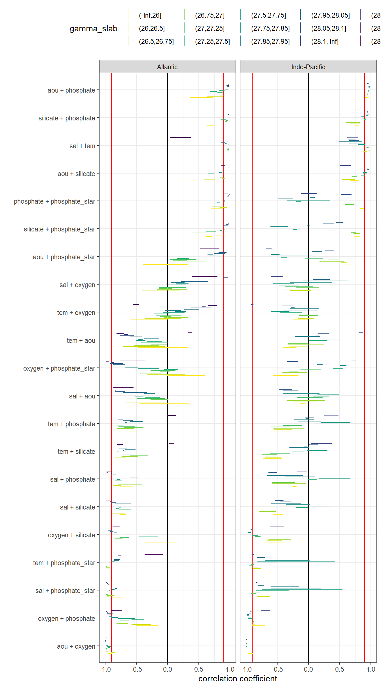
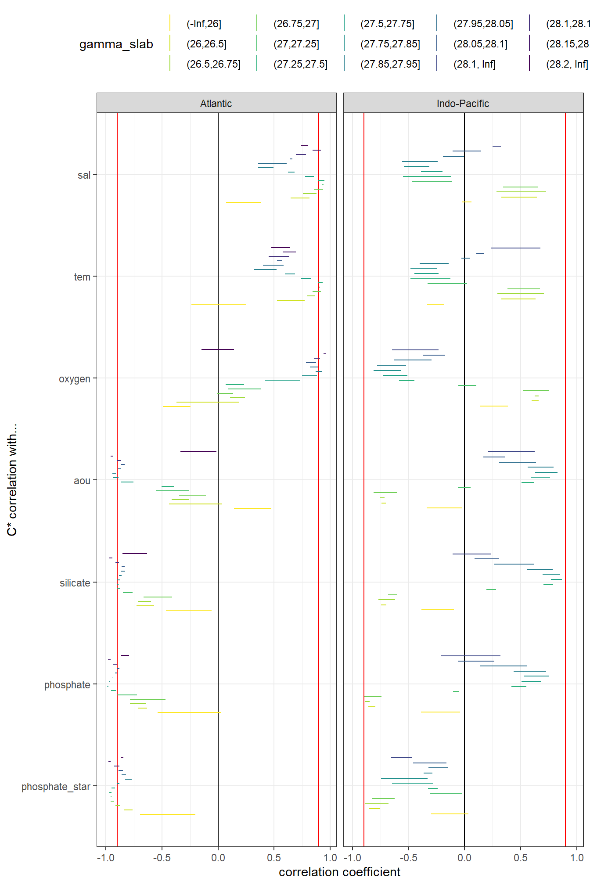

eMLR - assumption testing
Jens Daniel Müller
27 August, 2020
Last updated: 2020-08-27
Checks: 7 0
Knit directory: Cant_eMLR/
This reproducible R Markdown analysis was created with workflowr (version 1.6.2). The Checks tab describes the reproducibility checks that were applied when the results were created. The Past versions tab lists the development history.
Great! Since the R Markdown file has been committed to the Git repository, you know the exact version of the code that produced these results.
Great job! The global environment was empty. Objects defined in the global environment can affect the analysis in your R Markdown file in unknown ways. For reproduciblity it’s best to always run the code in an empty environment.
The command set.seed(20200707) was run prior to running the code in the R Markdown file. Setting a seed ensures that any results that rely on randomness, e.g. subsampling or permutations, are reproducible.
Great job! Recording the operating system, R version, and package versions is critical for reproducibility.
Nice! There were no cached chunks for this analysis, so you can be confident that you successfully produced the results during this run.
Great job! Using relative paths to the files within your workflowr project makes it easier to run your code on other machines.
Great! You are using Git for version control. Tracking code development and connecting the code version to the results is critical for reproducibility.
The results in this page were generated with repository version a48cc21. See the Past versions tab to see a history of the changes made to the R Markdown and HTML files.
Note that you need to be careful to ensure that all relevant files for the analysis have been committed to Git prior to generating the results (you can use wflow_publish or wflow_git_commit). workflowr only checks the R Markdown file, but you know if there are other scripts or data files that it depends on. Below is the status of the Git repository when the results were generated:
Ignored files:
Ignored: .Rproj.user/
Ignored: data/GLODAPv1_1/
Ignored: data/GLODAPv2_2016b_MappedClimatologies/
Ignored: data/GLODAPv2_2020/
Ignored: data/Gruber_2019/
Ignored: data/WOCE/
Ignored: data/World_Ocean_Atlas_2013_Clement/
Ignored: data/World_Ocean_Atlas_2018/
Ignored: data/eMLR/
Ignored: data/mapping/
Ignored: data/pCO2_atmosphere/
Ignored: dump/
Note that any generated files, e.g. HTML, png, CSS, etc., are not included in this status report because it is ok for generated content to have uncommitted changes.
These are the previous versions of the repository in which changes were made to the R Markdown (analysis/eMLR_assumption_testing.Rmd) and HTML (docs/eMLR_assumption_testing.html) files. If you’ve configured a remote Git repository (see ?wflow_git_remote), click on the hyperlinks in the table below to view the files as they were in that past version.
| File | Version | Author | Date | Message |
|---|---|---|---|---|
| html | b610bf7 | jens-daniel-mueller | 2020-08-27 | Build site. |
| Rmd | 96ab537 | jens-daniel-mueller | 2020-08-27 | revised |
| html | b6d0e6a | jens-daniel-mueller | 2020-08-27 | Build site. |
| html | f40e48b | jens-daniel-mueller | 2020-08-26 | Build site. |
| html | ec20f40 | jens-daniel-mueller | 2020-08-24 | Build site. |
| Rmd | a804955 | jens-daniel-mueller | 2020-08-24 | split mapping into 2 rmds, po4star selection in parameters, use po4star nitrate |
| html | 5ffe187 | jens-daniel-mueller | 2020-08-20 | Build site. |
| html | 1064ef8 | jens-daniel-mueller | 2020-08-19 | Build site. |
| Rmd | 94f9375 | jens-daniel-mueller | 2020-08-19 | split emlr into data preparation, assumption testing, and model fitting |
| html | 9af9978 | jens-daniel-mueller | 2020-08-19 | Build site. |
| Rmd | a6cb023 | jens-daniel-mueller | 2020-08-19 | split emlr into data preparation, assumption testing, and model fitting |
library(tidyverse)
library(lubridate)
library(patchwork)
library(GGally)
library(olsrr)
library(knitr)
library(kableExtra)
library(broom)
library(corrr)1 Required data
Required are:
- cleaned and prepared GLODAPv2.2020 file
GLODAP <-
read_csv(
here::here(
"data/GLODAPv2_2020/_summarized_data_files",
"GLODAP_MLR_fitting_ready.csv"
)
)2 Select phosphate star
Currently, correlation analysis is based on PO4* calculated with:
- nitrate
if (parameters$phosphate_star_approach == "nitrate") {
GLODAP <- GLODAP %>%
mutate(phosphate_star = phosphate_star_nit) %>%
select(-c(phosphate_star_oxy, phosphate_star_nit))
} else{
GLODAP <- GLODAP %>%
mutate(phosphate_star = phosphate_star_oxy) %>%
select(-c(phosphate_star_oxy, phosphate_star_nit))
}3 Predictor correlation
The correlation between:
- pairs of seven potential predictor variables and
- C* and seven potential predictor variables
were investigated based on:
- property-property plots and
- calculated correlation coeffcients.
3.1 Correlation plots
For an overview, a random subset of data from all eras was plotted separately for both basins, with color indicating neutral density slabs (high density = dark-purple color).
GLODAP %>%
filter(basin == "Atlantic") %>%
sample_frac(0.05) %>%
ggpairs(columns = c("Cstar",
"sal",
"tem",
"aou",
"oxygen",
"silicate",
"phosphate",
"phosphate_star"),
upper = "blank",
ggplot2::aes(col = gamma_slab, fill = gamma_slab, alpha = 0.01)) +
scale_fill_viridis_d(direction = -1) +
scale_color_viridis_d(direction = -1) +
labs(title = paste("Basin: Atlantic | era: all | subsample size: 5 % of",
nrow(GLODAP %>% filter(basin == "Atlantic"))))
GLODAP %>%
filter(basin == "Indo-Pacific") %>%
sample_frac(0.05) %>%
ggpairs(columns = c("Cstar",
"sal",
"tem",
"aou",
"oxygen",
"silicate",
"phosphate",
"phosphate_star"),
upper = "blank",
ggplot2::aes(col = gamma_slab, fill = gamma_slab, alpha = 0.01)) +
scale_fill_viridis_d(direction = -1) +
scale_color_viridis_d(direction = -1) +
labs(title = paste("Basin: Indo-Pacific | era: all | subsample size: 5 % of",
nrow(GLODAP %>% filter(basin == "Indo-Pacific") )))
Individual correlation plots for each basin, era and neutral density (gamma) slab are available here.
for (i_basin in unique(GLODAP$basin)) {
for (i_era in unique(GLODAP$era)) {
# i_basin <- unique(GLODAP$basin)[1]
# i_era <- unique(GLODAP$era)[1]
print(i_basin)
print(i_era)
GLODAP_basin_era <- GLODAP %>%
filter(basin == i_basin,
era == i_era)
for (i_gamma_slab in unique(GLODAP_basin_era$gamma_slab)) {
# i_gamma_slab <- unique(GLODAP_basin_era$gamma_slab)[5]
print(i_gamma_slab)
GLODAP_highlight <- GLODAP_basin_era %>%
mutate(gamma_highlight = if_else(gamma_slab == i_gamma_slab,
"in", "out")) %>%
arrange(desc(gamma_highlight))
p <- GLODAP_highlight %>%
ggpairs(columns = c("Cstar",
"sal",
"tem",
"aou",
"oxygen",
"silicate",
"phosphate",
"phosphate_star"),
ggplot2::aes(col = gamma_highlight, fill = gamma_highlight, alpha = 0.01)) +
scale_fill_manual( values = c("red", "grey")) +
scale_color_manual(values = c("red", "grey")) +
labs(title = paste(i_basin,
"|", i_era,
"| Gamma slab", i_gamma_slab,
"| # obs total", nrow(GLODAP_basin_era),
"| # obs slab", nrow(GLODAP_highlight %>%
filter(gamma_highlight == "in"))))
png(here::here("output/figure/eMLR/predictor_correlation",
paste("predictor_correlation", i_basin, i_era, i_gamma_slab, ".png", sep = "_")),
width = 12, height = 12, units = "in", res = 300)
print(p)
dev.off()
}
}
}3.2 Correlation assesment
3.2.1 Calculation of correlation coeffcients
Correlation coefficients were calculated indivdually within each slabs, era and basin.
for (i_basin in unique(GLODAP$basin)) {
for (i_era in unique(GLODAP$era)) {
# i_basin <- unique(GLODAP$basin)[1]
# i_era <- unique(GLODAP$era)[1]
print(i_basin)
print(i_era)
GLODAP_basin_era <- GLODAP %>%
filter(basin == i_basin,
era == i_era) %>%
select(basin,
era,
gamma_slab,
Cstar,
sal,
tem,
aou,
oxygen,
silicate,
phosphate,
phosphate_star)
for (i_gamma_slab in unique(GLODAP_basin_era$gamma_slab)) {
# i_gamma_slab <- unique(GLODAP_basin_era$gamma_slab)[5]
print(i_gamma_slab)
GLODAP_basin_era_slab <- GLODAP_basin_era %>%
filter(gamma_slab == i_gamma_slab)
cor_Cstar_predictor_temp <- GLODAP_basin_era_slab %>%
select(-c(basin, era, gamma_slab)) %>%
correlate() %>%
focus(Cstar) %>%
mutate(basin = i_basin,
era = i_era,
gamma_slab = i_gamma_slab)
if (exists("cor_Cstar_predictor")) {
cor_Cstar_predictor <- bind_rows(cor_Cstar_predictor, cor_Cstar_predictor_temp)
}
if (!exists("cor_Cstar_predictor")) {
cor_Cstar_predictor <- cor_Cstar_predictor_temp
}
cor_predictors_temp <- GLODAP_basin_era_slab %>%
select(-c(basin, era, gamma_slab)) %>%
correlate() %>%
shave %>%
stretch() %>%
filter(!is.na(r),
x != "Cstar",
y != "Cstar") %>%
mutate(pair = paste(x, y, sep = " + ")) %>%
select(-c(x, y)) %>%
mutate(basin = i_basin,
era = i_era,
gamma_slab = i_gamma_slab)
if (exists("cor_predictors")) {
cor_predictors <- bind_rows(cor_predictors, cor_predictors_temp)
}
if (!exists("cor_predictors")) {
cor_predictors <- cor_predictors_temp
}
}
}
}
cor_predictors %>%
write_csv(here::here("data/eMLR",
"cor_predictors.csv"))
cor_Cstar_predictor %>%
write_csv(here::here("data/eMLR",
"cor_Cstar_predictor.csv"))
rm(cor_predictors_temp, cor_Cstar_predictor_temp,
i_gamma_slab, i_era, i_basin,
GLODAP_basin_era, GLODAP_basin_era_slab)3.2.2 Predictor pairs
Below, the range of correlations coefficients for each predictor pair is plotted per basin (facet) and density slab (color). Note that the range indicates the min and max values of in total 3 calculated coefficients (one per era).
cor_predictors <-
read_csv(here::here("data/eMLR",
"cor_predictors.csv"))
cor_predictors_stats <- cor_predictors %>%
group_by(pair, basin, gamma_slab) %>%
summarise(mean_r = mean(r),
min_r = min(r),
max_r = max(r)) %>%
ungroup()
cor_predictors_stats %>%
mutate(pair = reorder(pair, mean_r)) %>%
ggplot() +
geom_vline(xintercept = c(-0.9, 0.9), col = "red") +
geom_vline(xintercept = 0) +
geom_linerange(
aes(y = pair, xmin = min_r, xmax = max_r, col = gamma_slab),
position = position_dodge(width = 0.6)) +
facet_wrap(~basin) +
scale_color_viridis_d(direction = -1) +
labs(x = "correlation coefficient", y = "") +
theme(legend.position = "top")
kable(cor_predictors_stats) %>%
add_header_above() %>%
kable_styling() %>%
scroll_box(width = "100%", height = "400px")| pair | basin | gamma_slab | mean_r | min_r | max_r |
|---|---|---|---|---|---|
| aou + oxygen | Atlantic | (-Inf,26] | -0.8649592 | -0.9534952 | -0.7550657 |
| aou + oxygen | Atlantic | (26,26.5] | -0.8926537 | -0.9107476 | -0.8626230 |
| aou + oxygen | Atlantic | (26.5,26.75] | -0.9715136 | -0.9853712 | -0.9536791 |
| aou + oxygen | Atlantic | (26.75,27] | -0.9810944 | -0.9922152 | -0.9718314 |
| aou + oxygen | Atlantic | (27,27.25] | -0.9770245 | -0.9875749 | -0.9659895 |
| aou + oxygen | Atlantic | (27.25,27.5] | -0.9575743 | -0.9707979 | -0.9410822 |
| aou + oxygen | Atlantic | (27.5,27.75] | -0.9433656 | -0.9784925 | -0.9036579 |
| aou + oxygen | Atlantic | (27.75,27.85] | -0.9811625 | -0.9898826 | -0.9759298 |
| aou + oxygen | Atlantic | (27.85,27.95] | -0.9902785 | -0.9945578 | -0.9874310 |
| aou + oxygen | Atlantic | (27.95,28.05] | -0.9891231 | -0.9921957 | -0.9834418 |
| aou + oxygen | Atlantic | (28.05,28.1] | -0.9899171 | -0.9952334 | -0.9821174 |
| aou + oxygen | Atlantic | (28.1,28.15] | -0.9937494 | -0.9945629 | -0.9925700 |
| aou + oxygen | Atlantic | (28.15,28.2] | -0.9983276 | -0.9988974 | -0.9974572 |
| aou + oxygen | Atlantic | (28.2, Inf] | -0.9865746 | -0.9901176 | -0.9831004 |
| aou + oxygen | Indo-Pacific | (-Inf,26] | -0.9236200 | -0.9667488 | -0.8972692 |
| aou + oxygen | Indo-Pacific | (26,26.5] | -0.9809220 | -0.9846582 | -0.9738150 |
| aou + oxygen | Indo-Pacific | (26.5,26.75] | -0.9853216 | -0.9882411 | -0.9820145 |
| aou + oxygen | Indo-Pacific | (26.75,27] | -0.9839547 | -0.9853368 | -0.9830976 |
| aou + oxygen | Indo-Pacific | (27,27.25] | -0.9886682 | -0.9928848 | -0.9803680 |
| aou + oxygen | Indo-Pacific | (27.25,27.5] | -0.9912564 | -0.9952681 | -0.9836197 |
| aou + oxygen | Indo-Pacific | (27.5,27.75] | -0.9906898 | -0.9938939 | -0.9850839 |
| aou + oxygen | Indo-Pacific | (27.75,27.85] | -0.9959869 | -0.9989585 | -0.9919032 |
| aou + oxygen | Indo-Pacific | (27.85,27.95] | -0.9967344 | -0.9990057 | -0.9944556 |
| aou + oxygen | Indo-Pacific | (27.95,28.05] | -0.9951746 | -0.9964353 | -0.9934051 |
| aou + oxygen | Indo-Pacific | (28.05,28.1] | -0.9956092 | -0.9966147 | -0.9946069 |
| aou + oxygen | Indo-Pacific | (28.1, Inf] | -0.9908817 | -0.9923555 | -0.9887883 |
| aou + phosphate | Atlantic | (-Inf,26] | 0.4734826 | 0.3638387 | 0.6886229 |
| aou + phosphate | Atlantic | (26,26.5] | 0.7653975 | 0.6261582 | 0.9141044 |
| aou + phosphate | Atlantic | (26.5,26.75] | 0.8900471 | 0.8461375 | 0.9294296 |
| aou + phosphate | Atlantic | (26.75,27] | 0.8795523 | 0.8327046 | 0.9238679 |
| aou + phosphate | Atlantic | (27,27.25] | 0.8131734 | 0.7311669 | 0.8599479 |
| aou + phosphate | Atlantic | (27.25,27.5] | 0.7107692 | 0.6507924 | 0.8023489 |
| aou + phosphate | Atlantic | (27.5,27.75] | 0.8619240 | 0.7979749 | 0.9188449 |
| aou + phosphate | Atlantic | (27.75,27.85] | 0.9516507 | 0.9423379 | 0.9684618 |
| aou + phosphate | Atlantic | (27.85,27.95] | 0.9583522 | 0.9518099 | 0.9679321 |
| aou + phosphate | Atlantic | (27.95,28.05] | 0.9644631 | 0.9541793 | 0.9836725 |
| aou + phosphate | Atlantic | (28.05,28.1] | 0.9720019 | 0.9561714 | 0.9907812 |
| aou + phosphate | Atlantic | (28.1,28.15] | 0.9800003 | 0.9782494 | 0.9823565 |
| aou + phosphate | Atlantic | (28.15,28.2] | 0.9926726 | 0.9890888 | 0.9944703 |
| aou + phosphate | Atlantic | (28.2, Inf] | 0.9008667 | 0.8698418 | 0.9476150 |
| aou + phosphate | Indo-Pacific | (-Inf,26] | 0.9430427 | 0.9128374 | 0.9696641 |
| aou + phosphate | Indo-Pacific | (26,26.5] | 0.9553712 | 0.9492126 | 0.9640881 |
| aou + phosphate | Indo-Pacific | (26.5,26.75] | 0.9515874 | 0.9392975 | 0.9638471 |
| aou + phosphate | Indo-Pacific | (26.75,27] | 0.9504577 | 0.9459297 | 0.9537914 |
| aou + phosphate | Indo-Pacific | (27,27.25] | 0.9660082 | 0.9484998 | 0.9794664 |
| aou + phosphate | Indo-Pacific | (27.25,27.5] | 0.9665270 | 0.9520615 | 0.9786942 |
| aou + phosphate | Indo-Pacific | (27.5,27.75] | 0.9572593 | 0.9503456 | 0.9610480 |
| aou + phosphate | Indo-Pacific | (27.75,27.85] | 0.9822762 | 0.9736000 | 0.9883639 |
| aou + phosphate | Indo-Pacific | (27.85,27.95] | 0.9801007 | 0.9706154 | 0.9891580 |
| aou + phosphate | Indo-Pacific | (27.95,28.05] | 0.9675386 | 0.9569900 | 0.9761508 |
| aou + phosphate | Indo-Pacific | (28.05,28.1] | 0.9573078 | 0.9443355 | 0.9715225 |
| aou + phosphate | Indo-Pacific | (28.1, Inf] | 0.7805310 | 0.7289653 | 0.8296450 |
| aou + phosphate_star | Atlantic | (-Inf,26] | -0.0046708 | -0.3912141 | 0.3114819 |
| aou + phosphate_star | Atlantic | (26,26.5] | 0.4300772 | 0.1321752 | 0.7973664 |
| aou + phosphate_star | Atlantic | (26.5,26.75] | 0.4796013 | 0.3786756 | 0.6411307 |
| aou + phosphate_star | Atlantic | (26.75,27] | 0.2222188 | 0.0842917 | 0.3240950 |
| aou + phosphate_star | Atlantic | (27,27.25] | 0.1079916 | -0.0375423 | 0.3056935 |
| aou + phosphate_star | Atlantic | (27.25,27.5] | 0.1051856 | -0.0808192 | 0.3213433 |
| aou + phosphate_star | Atlantic | (27.5,27.75] | 0.5876151 | 0.4954788 | 0.6735107 |
| aou + phosphate_star | Atlantic | (27.75,27.85] | 0.7792143 | 0.7509359 | 0.8345555 |
| aou + phosphate_star | Atlantic | (27.85,27.95] | 0.7164088 | 0.6541662 | 0.7614266 |
| aou + phosphate_star | Atlantic | (27.95,28.05] | 0.8225135 | 0.7423182 | 0.9224381 |
| aou + phosphate_star | Atlantic | (28.05,28.1] | 0.8913122 | 0.8404144 | 0.9665203 |
| aou + phosphate_star | Atlantic | (28.1,28.15] | 0.9222166 | 0.9102596 | 0.9326315 |
| aou + phosphate_star | Atlantic | (28.15,28.2] | 0.9766519 | 0.9624803 | 0.9848581 |
| aou + phosphate_star | Atlantic | (28.2, Inf] | 0.7171355 | 0.6490846 | 0.8429139 |
| aou + phosphate_star | Indo-Pacific | (-Inf,26] | 0.6693175 | 0.5307313 | 0.7555587 |
| aou + phosphate_star | Indo-Pacific | (26,26.5] | 0.5837717 | 0.5240940 | 0.6188757 |
| aou + phosphate_star | Indo-Pacific | (26.5,26.75] | 0.4266782 | 0.1688017 | 0.5786039 |
| aou + phosphate_star | Indo-Pacific | (26.75,27] | 0.3818999 | 0.3175560 | 0.4745062 |
| aou + phosphate_star | Indo-Pacific | (27,27.25] | 0.1504071 | 0.0554197 | 0.2370912 |
| aou + phosphate_star | Indo-Pacific | (27.25,27.5] | -0.3701667 | -0.3896454 | -0.3512955 |
| aou + phosphate_star | Indo-Pacific | (27.5,27.75] | -0.2957834 | -0.4968851 | 0.0532720 |
| aou + phosphate_star | Indo-Pacific | (27.75,27.85] | -0.4758260 | -0.6105114 | -0.3604524 |
| aou + phosphate_star | Indo-Pacific | (27.85,27.95] | -0.0706109 | -0.1217541 | 0.0022432 |
| aou + phosphate_star | Indo-Pacific | (27.95,28.05] | 0.2334948 | 0.1165401 | 0.3272652 |
| aou + phosphate_star | Indo-Pacific | (28.05,28.1] | 0.4075649 | 0.3611234 | 0.4634936 |
| aou + phosphate_star | Indo-Pacific | (28.1, Inf] | -0.6157020 | -0.6504537 | -0.5640415 |
| aou + silicate | Atlantic | (-Inf,26] | 0.2483086 | 0.0999433 | 0.4145649 |
| aou + silicate | Atlantic | (26,26.5] | 0.6752140 | 0.5721489 | 0.7731182 |
| aou + silicate | Atlantic | (26.5,26.75] | 0.8898595 | 0.8630962 | 0.9291670 |
| aou + silicate | Atlantic | (26.75,27] | 0.8813735 | 0.8604505 | 0.8978525 |
| aou + silicate | Atlantic | (27,27.25] | 0.7485513 | 0.7001785 | 0.8355002 |
| aou + silicate | Atlantic | (27.25,27.5] | 0.4386835 | 0.1974552 | 0.6853791 |
| aou + silicate | Atlantic | (27.5,27.75] | 0.6463627 | 0.5686096 | 0.6986785 |
| aou + silicate | Atlantic | (27.75,27.85] | 0.8599027 | 0.8457486 | 0.8725979 |
| aou + silicate | Atlantic | (27.85,27.95] | 0.8991805 | 0.8894100 | 0.9097791 |
| aou + silicate | Atlantic | (27.95,28.05] | 0.9463989 | 0.9389015 | 0.9587778 |
| aou + silicate | Atlantic | (28.05,28.1] | 0.9726957 | 0.9622239 | 0.9871131 |
| aou + silicate | Atlantic | (28.1,28.15] | 0.9753232 | 0.9722655 | 0.9793741 |
| aou + silicate | Atlantic | (28.15,28.2] | 0.9914205 | 0.9861528 | 0.9949392 |
| aou + silicate | Atlantic | (28.2, Inf] | 0.9091296 | 0.8734476 | 0.9335909 |
| aou + silicate | Indo-Pacific | (-Inf,26] | 0.7342122 | 0.6585781 | 0.8063089 |
| aou + silicate | Indo-Pacific | (26,26.5] | 0.6572498 | 0.5417991 | 0.7585899 |
| aou + silicate | Indo-Pacific | (26.5,26.75] | 0.6158987 | 0.4104356 | 0.7404216 |
| aou + silicate | Indo-Pacific | (26.75,27] | 0.7501441 | 0.6944079 | 0.7795344 |
| aou + silicate | Indo-Pacific | (27,27.25] | 0.8633912 | 0.8054567 | 0.9080614 |
| aou + silicate | Indo-Pacific | (27.25,27.5] | 0.8991978 | 0.8521049 | 0.9374566 |
| aou + silicate | Indo-Pacific | (27.5,27.75] | 0.9199124 | 0.8664890 | 0.9511857 |
| aou + silicate | Indo-Pacific | (27.75,27.85] | 0.9668533 | 0.9508782 | 0.9761360 |
| aou + silicate | Indo-Pacific | (27.85,27.95] | 0.9642729 | 0.9543989 | 0.9707377 |
| aou + silicate | Indo-Pacific | (27.95,28.05] | 0.9491873 | 0.9415492 | 0.9533539 |
| aou + silicate | Indo-Pacific | (28.05,28.1] | 0.9486127 | 0.9459875 | 0.9528102 |
| aou + silicate | Indo-Pacific | (28.1, Inf] | 0.6263672 | 0.5401927 | 0.6694759 |
| oxygen + phosphate | Atlantic | (-Inf,26] | -0.1674162 | -0.4104103 | 0.0641100 |
| oxygen + phosphate | Atlantic | (26,26.5] | -0.4406083 | -0.6340318 | -0.2503399 |
| oxygen + phosphate | Atlantic | (26.5,26.75] | -0.7647928 | -0.8281720 | -0.6498762 |
| oxygen + phosphate | Atlantic | (26.75,27] | -0.7743550 | -0.8714102 | -0.6807798 |
| oxygen + phosphate | Atlantic | (27,27.25] | -0.6748693 | -0.7574642 | -0.5326930 |
| oxygen + phosphate | Atlantic | (27.25,27.5] | -0.4878919 | -0.6095132 | -0.3610448 |
| oxygen + phosphate | Atlantic | (27.5,27.75] | -0.6639666 | -0.8346478 | -0.4787250 |
| oxygen + phosphate | Atlantic | (27.75,27.85] | -0.8808883 | -0.9296785 | -0.8562542 |
| oxygen + phosphate | Atlantic | (27.85,27.95] | -0.9158667 | -0.9438711 | -0.8972977 |
| oxygen + phosphate | Atlantic | (27.95,28.05] | -0.9287904 | -0.9647496 | -0.8937457 |
| oxygen + phosphate | Atlantic | (28.05,28.1] | -0.9393797 | -0.9822157 | -0.8922176 |
| oxygen + phosphate | Atlantic | (28.1,28.15] | -0.9584996 | -0.9641119 | -0.9526257 |
| oxygen + phosphate | Atlantic | (28.15,28.2] | -0.9893669 | -0.9941651 | -0.9808489 |
| oxygen + phosphate | Atlantic | (28.2, Inf] | -0.8387832 | -0.9065604 | -0.7960997 |
| oxygen + phosphate | Indo-Pacific | (-Inf,26] | -0.7930285 | -0.9142219 | -0.7019392 |
| oxygen + phosphate | Indo-Pacific | (26,26.5] | -0.8864940 | -0.9082971 | -0.8594038 |
| oxygen + phosphate | Indo-Pacific | (26.5,26.75] | -0.8902712 | -0.9168553 | -0.8728122 |
| oxygen + phosphate | Indo-Pacific | (26.75,27] | -0.8842393 | -0.8898956 | -0.8744815 |
| oxygen + phosphate | Indo-Pacific | (27,27.25] | -0.9233286 | -0.9555708 | -0.8761859 |
| oxygen + phosphate | Indo-Pacific | (27.25,27.5] | -0.9395039 | -0.9631710 | -0.8950246 |
| oxygen + phosphate | Indo-Pacific | (27.5,27.75] | -0.9521420 | -0.9704333 | -0.9221370 |
| oxygen + phosphate | Indo-Pacific | (27.75,27.85] | -0.9752401 | -0.9887694 | -0.9585316 |
| oxygen + phosphate | Indo-Pacific | (27.85,27.95] | -0.9720875 | -0.9878715 | -0.9582296 |
| oxygen + phosphate | Indo-Pacific | (27.95,28.05] | -0.9467136 | -0.9591235 | -0.9309152 |
| oxygen + phosphate | Indo-Pacific | (28.05,28.1] | -0.9338575 | -0.9526139 | -0.9222755 |
| oxygen + phosphate | Indo-Pacific | (28.1, Inf] | -0.7020610 | -0.7608328 | -0.6369693 |
| oxygen + phosphate_star | Atlantic | (-Inf,26] | 0.3528865 | 0.0500131 | 0.5970716 |
| oxygen + phosphate_star | Atlantic | (26,26.5] | -0.0319199 | -0.4264965 | 0.2905837 |
| oxygen + phosphate_star | Atlantic | (26.5,26.75] | -0.2731943 | -0.4598066 | -0.1296881 |
| oxygen + phosphate_star | Atlantic | (26.75,27] | -0.0391704 | -0.1287144 | 0.0366768 |
| oxygen + phosphate_star | Atlantic | (27,27.25] | 0.0975925 | -0.0997210 | 0.2017008 |
| oxygen + phosphate_star | Atlantic | (27.25,27.5] | 0.1736420 | -0.0503131 | 0.3089785 |
| oxygen + phosphate_star | Atlantic | (27.5,27.75] | -0.3120462 | -0.5272656 | -0.0896321 |
| oxygen + phosphate_star | Atlantic | (27.75,27.85] | -0.6523957 | -0.7566859 | -0.5982221 |
| oxygen + phosphate_star | Atlantic | (27.85,27.95] | -0.6234716 | -0.7023252 | -0.5429232 |
| oxygen + phosphate_star | Atlantic | (27.95,28.05] | -0.7512223 | -0.8819436 | -0.6783013 |
| oxygen + phosphate_star | Atlantic | (28.05,28.1] | -0.8327954 | -0.9487435 | -0.7332019 |
| oxygen + phosphate_star | Atlantic | (28.1,28.15] | -0.8825460 | -0.8983426 | -0.8725450 |
| oxygen + phosphate_star | Atlantic | (28.15,28.2] | -0.9700198 | -0.9835994 | -0.9472213 |
| oxygen + phosphate_star | Atlantic | (28.2, Inf] | -0.6201236 | -0.7758158 | -0.5387402 |
| oxygen + phosphate_star | Indo-Pacific | (-Inf,26] | -0.3861119 | -0.6074860 | -0.1539277 |
| oxygen + phosphate_star | Indo-Pacific | (26,26.5] | -0.4255621 | -0.4676614 | -0.3769321 |
| oxygen + phosphate_star | Indo-Pacific | (26.5,26.75] | -0.2775835 | -0.4205419 | -0.0071261 |
| oxygen + phosphate_star | Indo-Pacific | (26.75,27] | -0.2179551 | -0.3107928 | -0.1579429 |
| oxygen + phosphate_star | Indo-Pacific | (27,27.25] | -0.0170436 | -0.1348686 | 0.1312766 |
| oxygen + phosphate_star | Indo-Pacific | (27.25,27.5] | 0.4571403 | 0.3974966 | 0.5157307 |
| oxygen + phosphate_star | Indo-Pacific | (27.5,27.75] | 0.3199847 | -0.1091433 | 0.6122944 |
| oxygen + phosphate_star | Indo-Pacific | (27.75,27.85] | 0.5158211 | 0.4360726 | 0.6144466 |
| oxygen + phosphate_star | Indo-Pacific | (27.85,27.95] | 0.1146866 | 0.0598608 | 0.1772438 |
| oxygen + phosphate_star | Indo-Pacific | (27.95,28.05] | -0.1571118 | -0.2433196 | -0.0445188 |
| oxygen + phosphate_star | Indo-Pacific | (28.05,28.1] | -0.3362079 | -0.4034532 | -0.2746486 |
| oxygen + phosphate_star | Indo-Pacific | (28.1, Inf] | 0.7065573 | 0.6673037 | 0.7342386 |
| oxygen + silicate | Atlantic | (-Inf,26] | 0.0740460 | -0.1715993 | 0.2547323 |
| oxygen + silicate | Atlantic | (26,26.5] | -0.3515704 | -0.4412467 | -0.2235934 |
| oxygen + silicate | Atlantic | (26.5,26.75] | -0.7836869 | -0.8436954 | -0.7158471 |
| oxygen + silicate | Atlantic | (26.75,27] | -0.7944084 | -0.8525194 | -0.7406337 |
| oxygen + silicate | Atlantic | (27,27.25] | -0.6127201 | -0.7169366 | -0.5261458 |
| oxygen + silicate | Atlantic | (27.25,27.5] | -0.1942779 | -0.4764353 | 0.0213081 |
| oxygen + silicate | Atlantic | (27.5,27.75] | -0.4015912 | -0.5576857 | -0.2067138 |
| oxygen + silicate | Atlantic | (27.75,27.85] | -0.7635908 | -0.8042959 | -0.7344798 |
| oxygen + silicate | Atlantic | (27.85,27.95] | -0.8380938 | -0.8686412 | -0.8205418 |
| oxygen + silicate | Atlantic | (27.95,28.05] | -0.8959268 | -0.9213483 | -0.8675450 |
| oxygen + silicate | Atlantic | (28.05,28.1] | -0.9353880 | -0.9704777 | -0.8998925 |
| oxygen + silicate | Atlantic | (28.1,28.15] | -0.9499802 | -0.9535507 | -0.9460925 |
| oxygen + silicate | Atlantic | (28.15,28.2] | -0.9877779 | -0.9917614 | -0.9805963 |
| oxygen + silicate | Atlantic | (28.2, Inf] | -0.8490122 | -0.8881395 | -0.8031895 |
| oxygen + silicate | Indo-Pacific | (-Inf,26] | -0.5099508 | -0.7068590 | -0.3570615 |
| oxygen + silicate | Indo-Pacific | (26,26.5] | -0.5398888 | -0.6683985 | -0.4221230 |
| oxygen + silicate | Indo-Pacific | (26.5,26.75] | -0.4981957 | -0.6493148 | -0.2760317 |
| oxygen + silicate | Indo-Pacific | (26.75,27] | -0.6376236 | -0.6739034 | -0.5692528 |
| oxygen + silicate | Indo-Pacific | (27,27.25] | -0.7926824 | -0.8597978 | -0.6943939 |
| oxygen + silicate | Indo-Pacific | (27.25,27.5] | -0.8486711 | -0.9067036 | -0.7684755 |
| oxygen + silicate | Indo-Pacific | (27.5,27.75] | -0.8755877 | -0.9227396 | -0.7911157 |
| oxygen + silicate | Indo-Pacific | (27.75,27.85] | -0.9512889 | -0.9721552 | -0.9203932 |
| oxygen + silicate | Indo-Pacific | (27.85,27.95] | -0.9499935 | -0.9648651 | -0.9322933 |
| oxygen + silicate | Indo-Pacific | (27.95,28.05] | -0.9243300 | -0.9323370 | -0.9106410 |
| oxygen + silicate | Indo-Pacific | (28.05,28.1] | -0.9254025 | -0.9263804 | -0.9236258 |
| oxygen + silicate | Indo-Pacific | (28.1, Inf] | -0.5374285 | -0.5927076 | -0.4299572 |
| phosphate + phosphate_star | Atlantic | (-Inf,26] | 0.8417941 | 0.6992611 | 0.9358873 |
| phosphate + phosphate_star | Atlantic | (26,26.5] | 0.9014826 | 0.8536369 | 0.9698602 |
| phosphate + phosphate_star | Atlantic | (26.5,26.75] | 0.8221100 | 0.7499166 | 0.8785106 |
| phosphate + phosphate_star | Atlantic | (26.75,27] | 0.6462558 | 0.4582646 | 0.7495924 |
| phosphate + phosphate_star | Atlantic | (27,27.25] | 0.6554500 | 0.4963605 | 0.7485194 |
| phosphate + phosphate_star | Atlantic | (27.25,27.5] | 0.7675629 | 0.6750316 | 0.8224384 |
| phosphate + phosphate_star | Atlantic | (27.5,27.75] | 0.9127247 | 0.9080826 | 0.9173402 |
| phosphate + phosphate_star | Atlantic | (27.75,27.85] | 0.9327288 | 0.9261612 | 0.9443083 |
| phosphate + phosphate_star | Atlantic | (27.85,27.95] | 0.8834459 | 0.8468075 | 0.9054896 |
| phosphate + phosphate_star | Atlantic | (27.95,28.05] | 0.9404093 | 0.9033721 | 0.9749010 |
| phosphate + phosphate_star | Atlantic | (28.05,28.1] | 0.9713228 | 0.9612726 | 0.9912106 |
| phosphate + phosphate_star | Atlantic | (28.1,28.15] | 0.9798787 | 0.9754099 | 0.9827341 |
| phosphate + phosphate_star | Atlantic | (28.15,28.2] | 0.9950335 | 0.9915205 | 0.9973162 |
| phosphate + phosphate_star | Atlantic | (28.2, Inf] | 0.9465203 | 0.9311984 | 0.9696368 |
| phosphate + phosphate_star | Indo-Pacific | (-Inf,26] | 0.8617496 | 0.8117964 | 0.8962017 |
| phosphate + phosphate_star | Indo-Pacific | (26,26.5] | 0.7940721 | 0.7552344 | 0.8324453 |
| phosphate + phosphate_star | Indo-Pacific | (26.5,26.75] | 0.6767405 | 0.4942636 | 0.7995575 |
| phosphate + phosphate_star | Indo-Pacific | (26.75,27] | 0.6465057 | 0.5909912 | 0.7328202 |
| phosphate + phosphate_star | Indo-Pacific | (27,27.25] | 0.3913168 | 0.3627796 | 0.4209450 |
| phosphate + phosphate_star | Indo-Pacific | (27.25,27.5] | -0.1358574 | -0.2023155 | -0.0794665 |
| phosphate + phosphate_star | Indo-Pacific | (27.5,27.75] | -0.0387328 | -0.2587534 | 0.3458440 |
| phosphate + phosphate_star | Indo-Pacific | (27.75,27.85] | -0.3193581 | -0.4896367 | -0.1615271 |
| phosphate + phosphate_star | Indo-Pacific | (27.85,27.95] | 0.1145057 | 0.0487248 | 0.2281269 |
| phosphate + phosphate_star | Indo-Pacific | (27.95,28.05] | 0.4623862 | 0.3254063 | 0.5807686 |
| phosphate + phosphate_star | Indo-Pacific | (28.05,28.1] | 0.6478739 | 0.6019465 | 0.7257729 |
| phosphate + phosphate_star | Indo-Pacific | (28.1, Inf] | 0.0044632 | -0.0947674 | 0.1490954 |
| sal + aou | Atlantic | (-Inf,26] | -0.1432646 | -0.4515416 | 0.3475255 |
| sal + aou | Atlantic | (26,26.5] | -0.3201926 | -0.7540350 | -0.0089766 |
| sal + aou | Atlantic | (26.5,26.75] | -0.3104417 | -0.5297627 | -0.0916656 |
| sal + aou | Atlantic | (26.75,27] | -0.1615592 | -0.2786631 | 0.0067566 |
| sal + aou | Atlantic | (27,27.25] | -0.1165768 | -0.3548045 | 0.0723922 |
| sal + aou | Atlantic | (27.25,27.5] | -0.0813213 | -0.3370859 | 0.1745205 |
| sal + aou | Atlantic | (27.5,27.75] | -0.5179065 | -0.6268218 | -0.4303694 |
| sal + aou | Atlantic | (27.75,27.85] | -0.5789004 | -0.6947863 | -0.4959685 |
| sal + aou | Atlantic | (27.85,27.95] | -0.3629963 | -0.4900203 | -0.1651523 |
| sal + aou | Atlantic | (27.95,28.05] | -0.5444372 | -0.7817031 | -0.2117975 |
| sal + aou | Atlantic | (28.05,28.1] | -0.7522458 | -0.8748602 | -0.6651277 |
| sal + aou | Atlantic | (28.1,28.15] | -0.8192995 | -0.8471379 | -0.7855980 |
| sal + aou | Atlantic | (28.15,28.2] | -0.9570206 | -0.9830836 | -0.9258731 |
| sal + aou | Atlantic | (28.2, Inf] | -0.7460679 | -0.8727438 | -0.6675143 |
| sal + aou | Indo-Pacific | (-Inf,26] | -0.1009165 | -0.1352064 | -0.0327037 |
| sal + aou | Indo-Pacific | (26,26.5] | -0.0454146 | -0.2481356 | 0.1363007 |
| sal + aou | Indo-Pacific | (26.5,26.75] | -0.0497733 | -0.3658215 | 0.2665079 |
| sal + aou | Indo-Pacific | (26.75,27] | -0.1459755 | -0.3473383 | 0.0457714 |
| sal + aou | Indo-Pacific | (27,27.25] | -0.0649881 | -0.1830167 | 0.1660639 |
| sal + aou | Indo-Pacific | (27.25,27.5] | 0.1377868 | 0.0643601 | 0.2796906 |
| sal + aou | Indo-Pacific | (27.5,27.75] | 0.2886377 | 0.1342531 | 0.4871885 |
| sal + aou | Indo-Pacific | (27.75,27.85] | -0.1591760 | -0.4051461 | 0.1020511 |
| sal + aou | Indo-Pacific | (27.85,27.95] | -0.3664921 | -0.6902419 | -0.1163589 |
| sal + aou | Indo-Pacific | (27.95,28.05] | -0.3710596 | -0.4619637 | -0.2457736 |
| sal + aou | Indo-Pacific | (28.05,28.1] | -0.4568953 | -0.5848017 | -0.3673960 |
| sal + aou | Indo-Pacific | (28.1, Inf] | 0.4000127 | 0.2765693 | 0.4836507 |
| sal + oxygen | Atlantic | (-Inf,26] | -0.3068160 | -0.6018367 | -0.0830958 |
| sal + oxygen | Atlantic | (26,26.5] | -0.0940830 | -0.4081977 | 0.3368707 |
| sal + oxygen | Atlantic | (26.5,26.75] | 0.0922200 | -0.0688608 | 0.3329757 |
| sal + oxygen | Atlantic | (26.75,27] | -0.0209838 | -0.1260055 | 0.0825327 |
| sal + oxygen | Atlantic | (27,27.25] | -0.0855749 | -0.2229050 | 0.1542667 |
| sal + oxygen | Atlantic | (27.25,27.5] | -0.1912696 | -0.3922490 | 0.0699327 |
| sal + oxygen | Atlantic | (27.5,27.75] | 0.2325269 | 0.0201987 | 0.4689222 |
| sal + oxygen | Atlantic | (27.75,27.85] | 0.4185409 | 0.2998878 | 0.5925420 |
| sal + oxygen | Atlantic | (27.85,27.95] | 0.2436699 | 0.0265106 | 0.4082932 |
| sal + oxygen | Atlantic | (27.95,28.05] | 0.4447584 | 0.1139659 | 0.7153856 |
| sal + oxygen | Atlantic | (28.05,28.1] | 0.6624337 | 0.5789025 | 0.8292691 |
| sal + oxygen | Atlantic | (28.1,28.15] | 0.7534079 | 0.7203871 | 0.7787160 |
| sal + oxygen | Atlantic | (28.15,28.2] | 0.9410378 | 0.8997154 | 0.9747515 |
| sal + oxygen | Atlantic | (28.2, Inf] | 0.6530541 | 0.5554187 | 0.8087762 |
| sal + oxygen | Indo-Pacific | (-Inf,26] | -0.2049084 | -0.3225624 | -0.0853819 |
| sal + oxygen | Indo-Pacific | (26,26.5] | -0.1337941 | -0.2895367 | 0.0329220 |
| sal + oxygen | Indo-Pacific | (26.5,26.75] | -0.1107593 | -0.4189775 | 0.1870082 |
| sal + oxygen | Indo-Pacific | (26.75,27] | -0.0259236 | -0.2113746 | 0.1739144 |
| sal + oxygen | Indo-Pacific | (27,27.25] | -0.0719179 | -0.3515906 | 0.0715461 |
| sal + oxygen | Indo-Pacific | (27.25,27.5] | -0.2467897 | -0.4392475 | -0.1477670 |
| sal + oxygen | Indo-Pacific | (27.5,27.75] | -0.3947749 | -0.5708843 | -0.2210226 |
| sal + oxygen | Indo-Pacific | (27.75,27.85] | 0.0892654 | -0.2197215 | 0.3778925 |
| sal + oxygen | Indo-Pacific | (27.85,27.95] | 0.3099987 | 0.0234029 | 0.6777124 |
| sal + oxygen | Indo-Pacific | (27.95,28.05] | 0.2958454 | 0.1485588 | 0.4038045 |
| sal + oxygen | Indo-Pacific | (28.05,28.1] | 0.3810227 | 0.2769292 | 0.5276693 |
| sal + oxygen | Indo-Pacific | (28.1, Inf] | -0.4958183 | -0.5911751 | -0.3703990 |
| sal + phosphate | Atlantic | (-Inf,26] | -0.6674974 | -0.7820996 | -0.5430745 |
| sal + phosphate | Atlantic | (26,26.5] | -0.8108444 | -0.9106026 | -0.7555726 |
| sal + phosphate | Atlantic | (26.5,26.75] | -0.6648296 | -0.7958907 | -0.4410535 |
| sal + phosphate | Atlantic | (26.75,27] | -0.5830817 | -0.7103664 | -0.3527974 |
| sal + phosphate | Atlantic | (27,27.25] | -0.6473049 | -0.7748703 | -0.4488195 |
| sal + phosphate | Atlantic | (27.25,27.5] | -0.7277690 | -0.8205324 | -0.5666448 |
| sal + phosphate | Atlantic | (27.5,27.75] | -0.8381648 | -0.8500802 | -0.8286912 |
| sal + phosphate | Atlantic | (27.75,27.85] | -0.7676593 | -0.8124161 | -0.7242229 |
| sal + phosphate | Atlantic | (27.85,27.95] | -0.5753866 | -0.6558290 | -0.4163852 |
| sal + phosphate | Atlantic | (27.95,28.05] | -0.6925713 | -0.8394380 | -0.4308056 |
| sal + phosphate | Atlantic | (28.05,28.1] | -0.8424815 | -0.8975681 | -0.7678284 |
| sal + phosphate | Atlantic | (28.1,28.15] | -0.8850963 | -0.9173239 | -0.8539576 |
| sal + phosphate | Atlantic | (28.15,28.2] | -0.9626776 | -0.9794588 | -0.9536888 |
| sal + phosphate | Atlantic | (28.2, Inf] | -0.9500395 | -0.9784209 | -0.9210421 |
| sal + phosphate | Indo-Pacific | (-Inf,26] | -0.2199671 | -0.2522199 | -0.1978531 |
| sal + phosphate | Indo-Pacific | (26,26.5] | -0.2773404 | -0.4960600 | -0.0980940 |
| sal + phosphate | Indo-Pacific | (26.5,26.75] | -0.3020486 | -0.6021266 | -0.0358526 |
| sal + phosphate | Indo-Pacific | (26.75,27] | -0.4004903 | -0.6011400 | -0.2166537 |
| sal + phosphate | Indo-Pacific | (27,27.25] | -0.2470692 | -0.3543849 | -0.0875812 |
| sal + phosphate | Indo-Pacific | (27.25,27.5] | 0.0385895 | -0.0184517 | 0.0674829 |
| sal + phosphate | Indo-Pacific | (27.5,27.75] | 0.3251282 | 0.1069794 | 0.6706634 |
| sal + phosphate | Indo-Pacific | (27.75,27.85] | -0.1826353 | -0.3793168 | 0.0529917 |
| sal + phosphate | Indo-Pacific | (27.85,27.95] | -0.4106655 | -0.6925250 | -0.1626217 |
| sal + phosphate | Indo-Pacific | (27.95,28.05] | -0.5116451 | -0.5966346 | -0.3879426 |
| sal + phosphate | Indo-Pacific | (28.05,28.1] | -0.6183353 | -0.7160040 | -0.5687749 |
| sal + phosphate | Indo-Pacific | (28.1, Inf] | -0.1340679 | -0.2265805 | -0.0753210 |
| sal + phosphate_star | Atlantic | (-Inf,26] | -0.8254683 | -0.8980924 | -0.7017069 |
| sal + phosphate_star | Atlantic | (26,26.5] | -0.9626072 | -0.9663574 | -0.9589304 |
| sal + phosphate_star | Atlantic | (26.5,26.75] | -0.9261629 | -0.9792901 | -0.8219973 |
| sal + phosphate_star | Atlantic | (26.75,27] | -0.9712580 | -0.9870860 | -0.9469998 |
| sal + phosphate_star | Atlantic | (27,27.25] | -0.9805519 | -0.9853382 | -0.9712125 |
| sal + phosphate_star | Atlantic | (27.25,27.5] | -0.9731320 | -0.9837478 | -0.9521275 |
| sal + phosphate_star | Atlantic | (27.5,27.75] | -0.9470258 | -0.9551832 | -0.9327318 |
| sal + phosphate_star | Atlantic | (27.75,27.85] | -0.9134508 | -0.9232617 | -0.9045425 |
| sal + phosphate_star | Atlantic | (27.85,27.95] | -0.8452080 | -0.8714906 | -0.7945287 |
| sal + phosphate_star | Atlantic | (27.95,28.05] | -0.8461318 | -0.9222741 | -0.7178387 |
| sal + phosphate_star | Atlantic | (28.05,28.1] | -0.9101646 | -0.9446164 | -0.8593220 |
| sal + phosphate_star | Atlantic | (28.1,28.15] | -0.9339203 | -0.9602568 | -0.9092295 |
| sal + phosphate_star | Atlantic | (28.15,28.2] | -0.9655413 | -0.9761462 | -0.9510508 |
| sal + phosphate_star | Atlantic | (28.2, Inf] | -0.9859854 | -0.9940342 | -0.9793382 |
| sal + phosphate_star | Indo-Pacific | (-Inf,26] | -0.5171328 | -0.5389392 | -0.4999915 |
| sal + phosphate_star | Indo-Pacific | (26,26.5] | -0.7240844 | -0.8392745 | -0.6202371 |
| sal + phosphate_star | Indo-Pacific | (26.5,26.75] | -0.8405565 | -0.9178041 | -0.7841366 |
| sal + phosphate_star | Indo-Pacific | (26.75,27] | -0.8890168 | -0.9339791 | -0.8427789 |
| sal + phosphate_star | Indo-Pacific | (27,27.25] | -0.8325452 | -0.8599267 | -0.7857501 |
| sal + phosphate_star | Indo-Pacific | (27.25,27.5] | -0.5923856 | -0.8520808 | -0.3259006 |
| sal + phosphate_star | Indo-Pacific | (27.5,27.75] | -0.1234873 | -0.7611786 | 0.5427391 |
| sal + phosphate_star | Indo-Pacific | (27.75,27.85] | -0.2722999 | -0.5935319 | 0.2022713 |
| sal + phosphate_star | Indo-Pacific | (27.85,27.95] | -0.3835630 | -0.5877746 | -0.0749978 |
| sal + phosphate_star | Indo-Pacific | (27.95,28.05] | -0.7494771 | -0.7923241 | -0.6991280 |
| sal + phosphate_star | Indo-Pacific | (28.05,28.1] | -0.8194795 | -0.8746502 | -0.7474471 |
| sal + phosphate_star | Indo-Pacific | (28.1, Inf] | -0.8277533 | -0.8552088 | -0.8111767 |
| sal + silicate | Atlantic | (-Inf,26] | -0.7261494 | -0.7525608 | -0.6740976 |
| sal + silicate | Atlantic | (26,26.5] | -0.7796266 | -0.9153686 | -0.7102851 |
| sal + silicate | Atlantic | (26.5,26.75] | -0.5866197 | -0.7294011 | -0.3798612 |
| sal + silicate | Atlantic | (26.75,27] | -0.4743076 | -0.5946755 | -0.2657279 |
| sal + silicate | Atlantic | (27,27.25] | -0.6265728 | -0.7124112 | -0.5266697 |
| sal + silicate | Atlantic | (27.25,27.5] | -0.7804214 | -0.8072218 | -0.7380133 |
| sal + silicate | Atlantic | (27.5,27.75] | -0.8335519 | -0.8724894 | -0.8104220 |
| sal + silicate | Atlantic | (27.75,27.85] | -0.8068261 | -0.8711408 | -0.7518060 |
| sal + silicate | Atlantic | (27.85,27.95] | -0.6645767 | -0.7424304 | -0.5233429 |
| sal + silicate | Atlantic | (27.95,28.05] | -0.7297796 | -0.8813418 | -0.4777178 |
| sal + silicate | Atlantic | (28.05,28.1] | -0.8586566 | -0.9215330 | -0.7987466 |
| sal + silicate | Atlantic | (28.1,28.15] | -0.8986062 | -0.9139383 | -0.8712317 |
| sal + silicate | Atlantic | (28.15,28.2] | -0.9600948 | -0.9814279 | -0.9324982 |
| sal + silicate | Atlantic | (28.2, Inf] | -0.9288831 | -0.9859207 | -0.8845923 |
| sal + silicate | Indo-Pacific | (-Inf,26] | -0.5270930 | -0.5734450 | -0.4408109 |
| sal + silicate | Indo-Pacific | (26,26.5] | -0.5594750 | -0.6826305 | -0.4549151 |
| sal + silicate | Indo-Pacific | (26.5,26.75] | -0.6672722 | -0.8095833 | -0.5567328 |
| sal + silicate | Indo-Pacific | (26.75,27] | -0.6555953 | -0.7628181 | -0.4768095 |
| sal + silicate | Indo-Pacific | (27,27.25] | -0.4558834 | -0.5432176 | -0.3205614 |
| sal + silicate | Indo-Pacific | (27.25,27.5] | -0.1485818 | -0.1965007 | -0.0874834 |
| sal + silicate | Indo-Pacific | (27.5,27.75] | 0.1190636 | -0.0579965 | 0.3812169 |
| sal + silicate | Indo-Pacific | (27.75,27.85] | -0.2108744 | -0.3571247 | -0.0466023 |
| sal + silicate | Indo-Pacific | (27.85,27.95] | -0.3894004 | -0.6239515 | -0.2031514 |
| sal + silicate | Indo-Pacific | (27.95,28.05] | -0.4335087 | -0.4910533 | -0.3501070 |
| sal + silicate | Indo-Pacific | (28.05,28.1] | -0.5445378 | -0.6170559 | -0.4767160 |
| sal + silicate | Indo-Pacific | (28.1, Inf] | -0.0734950 | -0.1703735 | 0.0732319 |
| sal + tem | Atlantic | (-Inf,26] | 0.9243866 | 0.8381654 | 0.9836628 |
| sal + tem | Atlantic | (26,26.5] | 0.9689040 | 0.9614255 | 0.9743585 |
| sal + tem | Atlantic | (26.5,26.75] | 0.9689940 | 0.9283729 | 0.9899580 |
| sal + tem | Atlantic | (26.75,27] | 0.9731618 | 0.9560699 | 0.9835156 |
| sal + tem | Atlantic | (27,27.25] | 0.9739276 | 0.9655494 | 0.9804064 |
| sal + tem | Atlantic | (27.25,27.5] | 0.9651866 | 0.9459424 | 0.9754742 |
| sal + tem | Atlantic | (27.5,27.75] | 0.9511977 | 0.9293291 | 0.9632293 |
| sal + tem | Atlantic | (27.75,27.85] | 0.9721381 | 0.9542083 | 0.9813340 |
| sal + tem | Atlantic | (27.85,27.95] | 0.9291113 | 0.8991159 | 0.9512567 |
| sal + tem | Atlantic | (27.95,28.05] | 0.8732041 | 0.8069203 | 0.9305324 |
| sal + tem | Atlantic | (28.05,28.1] | 0.9499251 | 0.9127320 | 0.9696202 |
| sal + tem | Atlantic | (28.1,28.15] | 0.9418760 | 0.9168693 | 0.9692410 |
| sal + tem | Atlantic | (28.15,28.2] | 0.8792869 | 0.8448086 | 0.9065752 |
| sal + tem | Atlantic | (28.2, Inf] | 0.1242844 | 0.0276649 | 0.1790116 |
| sal + tem | Indo-Pacific | (-Inf,26] | 0.7709446 | 0.7412215 | 0.8182287 |
| sal + tem | Indo-Pacific | (26,26.5] | 0.9286350 | 0.8849934 | 0.9530410 |
| sal + tem | Indo-Pacific | (26.5,26.75] | 0.9782777 | 0.9690853 | 0.9832743 |
| sal + tem | Indo-Pacific | (26.75,27] | 0.9768624 | 0.9720412 | 0.9799282 |
| sal + tem | Indo-Pacific | (27,27.25] | 0.9501887 | 0.9326527 | 0.9710015 |
| sal + tem | Indo-Pacific | (27.25,27.5] | 0.8810593 | 0.8280724 | 0.9585099 |
| sal + tem | Indo-Pacific | (27.5,27.75] | 0.8641666 | 0.7977158 | 0.9159312 |
| sal + tem | Indo-Pacific | (27.75,27.85] | 0.8138537 | 0.6545628 | 0.9395278 |
| sal + tem | Indo-Pacific | (27.85,27.95] | 0.7036211 | 0.4548127 | 0.8728347 |
| sal + tem | Indo-Pacific | (27.95,28.05] | 0.7224713 | 0.6298824 | 0.8210732 |
| sal + tem | Indo-Pacific | (28.05,28.1] | 0.6987818 | 0.5756878 | 0.7977441 |
| sal + tem | Indo-Pacific | (28.1, Inf] | 0.7138260 | 0.5996297 | 0.8278324 |
| silicate + phosphate | Atlantic | (-Inf,26] | 0.6416577 | 0.6151173 | 0.6703874 |
| silicate + phosphate | Atlantic | (26,26.5] | 0.9168791 | 0.9020743 | 0.9253733 |
| silicate + phosphate | Atlantic | (26.5,26.75] | 0.9668808 | 0.9622374 | 0.9712821 |
| silicate + phosphate | Atlantic | (26.75,27] | 0.9507435 | 0.9407716 | 0.9610085 |
| silicate + phosphate | Atlantic | (27,27.25] | 0.9377999 | 0.9185888 | 0.9556204 |
| silicate + phosphate | Atlantic | (27.25,27.5] | 0.8621449 | 0.7619586 | 0.9280920 |
| silicate + phosphate | Atlantic | (27.5,27.75] | 0.8959625 | 0.8913960 | 0.9025059 |
| silicate + phosphate | Atlantic | (27.75,27.85] | 0.9536127 | 0.9486100 | 0.9622012 |
| silicate + phosphate | Atlantic | (27.85,27.95] | 0.9701883 | 0.9660126 | 0.9779890 |
| silicate + phosphate | Atlantic | (27.95,28.05] | 0.9796016 | 0.9759663 | 0.9861861 |
| silicate + phosphate | Atlantic | (28.05,28.1] | 0.9891717 | 0.9850664 | 0.9915874 |
| silicate + phosphate | Atlantic | (28.1,28.15] | 0.9932582 | 0.9920966 | 0.9941059 |
| silicate + phosphate | Atlantic | (28.15,28.2] | 0.9945504 | 0.9904101 | 0.9979614 |
| silicate + phosphate | Atlantic | (28.2, Inf] | 0.9863763 | 0.9807922 | 0.9966812 |
| silicate + phosphate | Indo-Pacific | (-Inf,26] | 0.7970067 | 0.7532736 | 0.8266286 |
| silicate + phosphate | Indo-Pacific | (26,26.5] | 0.7619353 | 0.6642843 | 0.8380775 |
| silicate + phosphate | Indo-Pacific | (26.5,26.75] | 0.7521585 | 0.5918573 | 0.8429329 |
| silicate + phosphate | Indo-Pacific | (26.75,27] | 0.8535242 | 0.8040469 | 0.8812693 |
| silicate + phosphate | Indo-Pacific | (27,27.25] | 0.8982683 | 0.8736363 | 0.9330540 |
| silicate + phosphate | Indo-Pacific | (27.25,27.5] | 0.8839535 | 0.8592060 | 0.9262076 |
| silicate + phosphate | Indo-Pacific | (27.5,27.75] | 0.8684476 | 0.8459587 | 0.8983565 |
| silicate + phosphate | Indo-Pacific | (27.75,27.85] | 0.9510737 | 0.9308561 | 0.9640862 |
| silicate + phosphate | Indo-Pacific | (27.85,27.95] | 0.9643449 | 0.9516445 | 0.9715323 |
| silicate + phosphate | Indo-Pacific | (27.95,28.05] | 0.9592635 | 0.9505559 | 0.9637854 |
| silicate + phosphate | Indo-Pacific | (28.05,28.1] | 0.9558185 | 0.9482961 | 0.9622048 |
| silicate + phosphate | Indo-Pacific | (28.1, Inf] | 0.7942203 | 0.7644862 | 0.8300839 |
| silicate + phosphate_star | Atlantic | (-Inf,26] | 0.6366914 | 0.5879842 | 0.7021616 |
| silicate + phosphate_star | Atlantic | (26,26.5] | 0.8440720 | 0.7942715 | 0.9407649 |
| silicate + phosphate_star | Atlantic | (26.5,26.75] | 0.7613263 | 0.7229402 | 0.8197783 |
| silicate + phosphate_star | Atlantic | (26.75,27] | 0.5519551 | 0.3915525 | 0.6496392 |
| silicate + phosphate_star | Atlantic | (27,27.25] | 0.6489643 | 0.5898768 | 0.7005654 |
| silicate + phosphate_star | Atlantic | (27.25,27.5] | 0.8415918 | 0.8273388 | 0.8510667 |
| silicate + phosphate_star | Atlantic | (27.5,27.75] | 0.9306729 | 0.9174791 | 0.9551222 |
| silicate + phosphate_star | Atlantic | (27.75,27.85] | 0.9493268 | 0.9353454 | 0.9676196 |
| silicate + phosphate_star | Atlantic | (27.85,27.95] | 0.9164859 | 0.8884907 | 0.9359810 |
| silicate + phosphate_star | Atlantic | (27.95,28.05] | 0.9331219 | 0.8893533 | 0.9698010 |
| silicate + phosphate_star | Atlantic | (28.05,28.1] | 0.9567132 | 0.9419911 | 0.9853204 |
| silicate + phosphate_star | Atlantic | (28.1,28.15] | 0.9748909 | 0.9683881 | 0.9855393 |
| silicate + phosphate_star | Atlantic | (28.15,28.2] | 0.9870362 | 0.9759047 | 0.9955390 |
| silicate + phosphate_star | Atlantic | (28.2, Inf] | 0.9205540 | 0.8771634 | 0.9753485 |
| silicate + phosphate_star | Indo-Pacific | (-Inf,26] | 0.7890529 | 0.7522686 | 0.8318447 |
| silicate + phosphate_star | Indo-Pacific | (26,26.5] | 0.7857894 | 0.7483522 | 0.8083937 |
| silicate + phosphate_star | Indo-Pacific | (26.5,26.75] | 0.8015539 | 0.7209918 | 0.8535863 |
| silicate + phosphate_star | Indo-Pacific | (26.75,27] | 0.7451556 | 0.7159369 | 0.7756234 |
| silicate + phosphate_star | Indo-Pacific | (27,27.25] | 0.4367303 | 0.4056670 | 0.4543556 |
| silicate + phosphate_star | Indo-Pacific | (27.25,27.5] | -0.1848546 | -0.2468943 | -0.0670824 |
| silicate + phosphate_star | Indo-Pacific | (27.5,27.75] | -0.2136161 | -0.3915646 | -0.0028587 |
| silicate + phosphate_star | Indo-Pacific | (27.75,27.85] | -0.4132408 | -0.6129553 | -0.2477974 |
| silicate + phosphate_star | Indo-Pacific | (27.85,27.95] | 0.0579413 | 0.0037064 | 0.1476500 |
| silicate + phosphate_star | Indo-Pacific | (27.95,28.05] | 0.4012843 | 0.2858781 | 0.4946502 |
| silicate + phosphate_star | Indo-Pacific | (28.05,28.1] | 0.5528485 | 0.5198432 | 0.6009765 |
| silicate + phosphate_star | Indo-Pacific | (28.1, Inf] | 0.0305801 | -0.0810146 | 0.1870916 |
| tem + aou | Atlantic | (-Inf,26] | -0.1743816 | -0.4969123 | 0.3256589 |
| tem + aou | Atlantic | (26,26.5] | -0.3580329 | -0.8053558 | -0.0649893 |
| tem + aou | Atlantic | (26.5,26.75] | -0.3722841 | -0.5394586 | -0.2549241 |
| tem + aou | Atlantic | (26.75,27] | -0.1683674 | -0.2684537 | -0.0276806 |
| tem + aou | Atlantic | (27,27.25] | -0.0682557 | -0.2812963 | 0.0881961 |
| tem + aou | Atlantic | (27.25,27.5] | -0.0475537 | -0.2994314 | 0.1889626 |
| tem + aou | Atlantic | (27.5,27.75] | -0.4692662 | -0.5735174 | -0.3726367 |
| tem + aou | Atlantic | (27.75,27.85] | -0.5371895 | -0.5972745 | -0.4812475 |
| tem + aou | Atlantic | (27.85,27.95] | -0.2871178 | -0.4114486 | -0.0801036 |
| tem + aou | Atlantic | (27.95,28.05] | -0.5029701 | -0.6507725 | -0.3144163 |
| tem + aou | Atlantic | (28.05,28.1] | -0.6055560 | -0.7966052 | -0.4385820 |
| tem + aou | Atlantic | (28.1,28.15] | -0.6251286 | -0.7359709 | -0.5162407 |
| tem + aou | Atlantic | (28.15,28.2] | -0.7568571 | -0.8386287 | -0.7053858 |
| tem + aou | Atlantic | (28.2, Inf] | 0.3945630 | 0.3290807 | 0.4367369 |
| tem + aou | Indo-Pacific | (-Inf,26] | -0.2723472 | -0.4109832 | -0.1756575 |
| tem + aou | Indo-Pacific | (26,26.5] | -0.1190502 | -0.2974707 | -0.0164962 |
| tem + aou | Indo-Pacific | (26.5,26.75] | -0.0400474 | -0.3350699 | 0.2574432 |
| tem + aou | Indo-Pacific | (26.75,27] | -0.1641702 | -0.3441368 | -0.0129495 |
| tem + aou | Indo-Pacific | (27,27.25] | -0.1429234 | -0.2802564 | 0.0782669 |
| tem + aou | Indo-Pacific | (27.25,27.5] | 0.1101352 | 0.0034490 | 0.2629607 |
| tem + aou | Indo-Pacific | (27.5,27.75] | 0.3195645 | 0.1858558 | 0.5050516 |
| tem + aou | Indo-Pacific | (27.75,27.85] | -0.0032064 | -0.1982387 | 0.1936379 |
| tem + aou | Indo-Pacific | (27.85,27.95] | -0.0703416 | -0.2789347 | 0.0637697 |
| tem + aou | Indo-Pacific | (27.95,28.05] | 0.0906200 | 0.0763459 | 0.1173523 |
| tem + aou | Indo-Pacific | (28.05,28.1] | 0.1582755 | 0.0357532 | 0.2615890 |
| tem + aou | Indo-Pacific | (28.1, Inf] | 0.8408267 | 0.8004585 | 0.8667850 |
| tem + oxygen | Atlantic | (-Inf,26] | -0.3030869 | -0.5951659 | -0.1206498 |
| tem + oxygen | Atlantic | (26,26.5] | -0.0631834 | -0.3662989 | 0.3951096 |
| tem + oxygen | Atlantic | (26.5,26.75] | 0.1501520 | 0.0229157 | 0.3410353 |
| tem + oxygen | Atlantic | (26.75,27] | -0.0187923 | -0.0969456 | 0.0678025 |
| tem + oxygen | Atlantic | (27,27.25] | -0.1392797 | -0.2470567 | 0.0727534 |
| tem + oxygen | Atlantic | (27.25,27.5] | -0.2342907 | -0.4189103 | 0.0234851 |
| tem + oxygen | Atlantic | (27.5,27.75] | 0.1626846 | -0.0599984 | 0.3923956 |
| tem + oxygen | Atlantic | (27.75,27.85] | 0.3665730 | 0.2786541 | 0.4775132 |
| tem + oxygen | Atlantic | (27.85,27.95] | 0.1550249 | -0.0688684 | 0.2712348 |
| tem + oxygen | Atlantic | (27.95,28.05] | 0.3748894 | 0.1904284 | 0.5513913 |
| tem + oxygen | Atlantic | (28.05,28.1] | 0.4937831 | 0.3267804 | 0.7353029 |
| tem + oxygen | Atlantic | (28.1,28.15] | 0.5386124 | 0.4288408 | 0.6502208 |
| tem + oxygen | Atlantic | (28.15,28.2] | 0.7204515 | 0.6694534 | 0.8135067 |
| tem + oxygen | Atlantic | (28.2, Inf] | -0.5323950 | -0.5910094 | -0.4520965 |
| tem + oxygen | Indo-Pacific | (-Inf,26] | -0.1031201 | -0.2745694 | -0.0100674 |
| tem + oxygen | Indo-Pacific | (26,26.5] | -0.0728758 | -0.1580124 | 0.0729347 |
| tem + oxygen | Indo-Pacific | (26.5,26.75] | -0.1251586 | -0.4163080 | 0.1513389 |
| tem + oxygen | Indo-Pacific | (26.75,27] | -0.0123104 | -0.1574711 | 0.1667299 |
| tem + oxygen | Indo-Pacific | (27,27.25] | -0.0002536 | -0.2729761 | 0.1640281 |
| tem + oxygen | Indo-Pacific | (27.25,27.5] | -0.2324197 | -0.4322640 | -0.1005341 |
| tem + oxygen | Indo-Pacific | (27.5,27.75] | -0.4416834 | -0.6026866 | -0.2929571 |
| tem + oxygen | Indo-Pacific | (27.75,27.85] | -0.0780331 | -0.3165264 | 0.1534029 |
| tem + oxygen | Indo-Pacific | (27.85,27.95] | -0.0054680 | -0.1680901 | 0.2362149 |
| tem + oxygen | Indo-Pacific | (27.95,28.05] | -0.1860042 | -0.1995946 | -0.1673701 |
| tem + oxygen | Indo-Pacific | (28.05,28.1] | -0.2406214 | -0.3537611 | -0.1237291 |
| tem + oxygen | Indo-Pacific | (28.1, Inf] | -0.9012284 | -0.9172228 | -0.8760409 |
| tem + phosphate | Atlantic | (-Inf,26] | -0.5737454 | -0.6217540 | -0.4813899 |
| tem + phosphate | Atlantic | (26,26.5] | -0.8127119 | -0.9137204 | -0.7461798 |
| tem + phosphate | Atlantic | (26.5,26.75] | -0.7219494 | -0.8013726 | -0.5982804 |
| tem + phosphate | Atlantic | (26.75,27] | -0.5908528 | -0.7059281 | -0.3879969 |
| tem + phosphate | Atlantic | (27,27.25] | -0.6118580 | -0.7235873 | -0.4335709 |
| tem + phosphate | Atlantic | (27.25,27.5] | -0.7028507 | -0.7945460 | -0.5507688 |
| tem + phosphate | Atlantic | (27.5,27.75] | -0.7979194 | -0.8160782 | -0.7785202 |
| tem + phosphate | Atlantic | (27.75,27.85] | -0.7386035 | -0.7599320 | -0.7137399 |
| tem + phosphate | Atlantic | (27.85,27.95] | -0.4996791 | -0.6373654 | -0.3337133 |
| tem + phosphate | Atlantic | (27.95,28.05] | -0.6304825 | -0.7264179 | -0.4548313 |
| tem + phosphate | Atlantic | (28.05,28.1] | -0.7140492 | -0.8185893 | -0.5630099 |
| tem + phosphate | Atlantic | (28.1,28.15] | -0.7129984 | -0.8231463 | -0.6151388 |
| tem + phosphate | Atlantic | (28.15,28.2] | -0.7561551 | -0.8159999 | -0.6922176 |
| tem + phosphate | Atlantic | (28.2, Inf] | 0.1149220 | 0.0701460 | 0.1430906 |
| tem + phosphate | Indo-Pacific | (-Inf,26] | -0.4324320 | -0.5910107 | -0.2998380 |
| tem + phosphate | Indo-Pacific | (26,26.5] | -0.3679478 | -0.5543036 | -0.2683633 |
| tem + phosphate | Indo-Pacific | (26.5,26.75] | -0.3051266 | -0.5843808 | -0.0603493 |
| tem + phosphate | Indo-Pacific | (26.75,27] | -0.4338290 | -0.6099013 | -0.2910911 |
| tem + phosphate | Indo-Pacific | (27,27.25] | -0.3433012 | -0.4220860 | -0.1961448 |
| tem + phosphate | Indo-Pacific | (27.25,27.5] | -0.0184775 | -0.1096232 | 0.0284870 |
| tem + phosphate | Indo-Pacific | (27.5,27.75] | 0.3479935 | 0.1237490 | 0.6725195 |
| tem + phosphate | Indo-Pacific | (27.75,27.85] | -0.0281936 | -0.1669361 | 0.1343332 |
| tem + phosphate | Indo-Pacific | (27.85,27.95] | -0.1200123 | -0.2780650 | -0.0010696 |
| tem + phosphate | Indo-Pacific | (27.95,28.05] | -0.0710536 | -0.0944506 | -0.0398646 |
| tem + phosphate | Indo-Pacific | (28.05,28.1] | -0.0289602 | -0.1498496 | 0.0490411 |
| tem + phosphate | Indo-Pacific | (28.1, Inf] | 0.3944451 | 0.2679137 | 0.4779643 |
| tem + phosphate_star | Atlantic | (-Inf,26] | -0.7318945 | -0.8216824 | -0.6327666 |
| tem + phosphate_star | Atlantic | (26,26.5] | -0.9514893 | -0.9662142 | -0.9440270 |
| tem + phosphate_star | Atlantic | (26.5,26.75] | -0.9570354 | -0.9831278 | -0.9089610 |
| tem + phosphate_star | Atlantic | (26.75,27] | -0.9793217 | -0.9880366 | -0.9660538 |
| tem + phosphate_star | Atlantic | (27,27.25] | -0.9842653 | -0.9897957 | -0.9757177 |
| tem + phosphate_star | Atlantic | (27.25,27.5] | -0.9755946 | -0.9852903 | -0.9573820 |
| tem + phosphate_star | Atlantic | (27.5,27.75] | -0.9333588 | -0.9529755 | -0.9026717 |
| tem + phosphate_star | Atlantic | (27.75,27.85] | -0.9073062 | -0.9275607 | -0.8905753 |
| tem + phosphate_star | Atlantic | (27.85,27.95] | -0.8004039 | -0.8743779 | -0.7502663 |
| tem + phosphate_star | Atlantic | (27.95,28.05] | -0.7884896 | -0.8826831 | -0.6772425 |
| tem + phosphate_star | Atlantic | (28.05,28.1] | -0.8201468 | -0.8893416 | -0.7112782 |
| tem + phosphate_star | Atlantic | (28.1,28.15] | -0.8007936 | -0.8922391 | -0.7248093 |
| tem + phosphate_star | Atlantic | (28.15,28.2] | -0.7712762 | -0.8122706 | -0.7028588 |
| tem + phosphate_star | Atlantic | (28.2, Inf] | -0.1489882 | -0.2179165 | -0.0480381 |
| tem + phosphate_star | Indo-Pacific | (-Inf,26] | -0.7506745 | -0.8459975 | -0.6170532 |
| tem + phosphate_star | Indo-Pacific | (26,26.5] | -0.8213438 | -0.8986420 | -0.7608949 |
| tem + phosphate_star | Indo-Pacific | (26.5,26.75] | -0.8671106 | -0.9290601 | -0.8071063 |
| tem + phosphate_star | Indo-Pacific | (26.75,27] | -0.9353959 | -0.9612253 | -0.9085892 |
| tem + phosphate_star | Indo-Pacific | (27,27.25] | -0.9136393 | -0.9312277 | -0.8790975 |
| tem + phosphate_star | Indo-Pacific | (27.25,27.5] | -0.7134369 | -0.9113800 | -0.5004017 |
| tem + phosphate_star | Indo-Pacific | (27.5,27.75] | -0.2140148 | -0.8192619 | 0.4267555 |
| tem + phosphate_star | Indo-Pacific | (27.75,27.85] | -0.4011292 | -0.6718990 | 0.0137202 |
| tem + phosphate_star | Indo-Pacific | (27.85,27.95] | -0.5044227 | -0.6762457 | -0.2610595 |
| tem + phosphate_star | Indo-Pacific | (27.95,28.05] | -0.7343945 | -0.8076554 | -0.6766540 |
| tem + phosphate_star | Indo-Pacific | (28.05,28.1] | -0.5964383 | -0.6160697 | -0.5749309 |
| tem + phosphate_star | Indo-Pacific | (28.1, Inf] | -0.8757873 | -0.8944860 | -0.8648595 |
| tem + silicate | Atlantic | (-Inf,26] | -0.6224072 | -0.6907364 | -0.5118555 |
| tem + silicate | Atlantic | (26,26.5] | -0.7607022 | -0.8811499 | -0.6782082 |
| tem + silicate | Atlantic | (26.5,26.75] | -0.6518273 | -0.7401620 | -0.5527532 |
| tem + silicate | Atlantic | (26.75,27] | -0.5053257 | -0.6058513 | -0.3330611 |
| tem + silicate | Atlantic | (27,27.25] | -0.6229851 | -0.6895759 | -0.5534387 |
| tem + silicate | Atlantic | (27.25,27.5] | -0.8332092 | -0.8378258 | -0.8288195 |
| tem + silicate | Atlantic | (27.5,27.75] | -0.8642311 | -0.8919458 | -0.8390068 |
| tem + silicate | Atlantic | (27.75,27.85] | -0.8113282 | -0.8564200 | -0.7626576 |
| tem + silicate | Atlantic | (27.85,27.95] | -0.6180989 | -0.7277576 | -0.4641837 |
| tem + silicate | Atlantic | (27.95,28.05] | -0.7134765 | -0.8095948 | -0.5596467 |
| tem + silicate | Atlantic | (28.05,28.1] | -0.7428275 | -0.8611493 | -0.6125043 |
| tem + silicate | Atlantic | (28.1,28.15] | -0.7357393 | -0.8171544 | -0.6424877 |
| tem + silicate | Atlantic | (28.15,28.2] | -0.7582635 | -0.8228728 | -0.7255889 |
| tem + silicate | Atlantic | (28.2, Inf] | 0.1328867 | 0.1035429 | 0.1811469 |
| tem + silicate | Indo-Pacific | (-Inf,26] | -0.5967580 | -0.7260970 | -0.4499679 |
| tem + silicate | Indo-Pacific | (26,26.5] | -0.6097280 | -0.7156437 | -0.4703853 |
| tem + silicate | Indo-Pacific | (26.5,26.75] | -0.6660606 | -0.8017637 | -0.5602649 |
| tem + silicate | Indo-Pacific | (26.75,27] | -0.6678028 | -0.7561768 | -0.5323795 |
| tem + silicate | Indo-Pacific | (27,27.25] | -0.5247966 | -0.6210395 | -0.4123352 |
| tem + silicate | Indo-Pacific | (27.25,27.5] | -0.2262236 | -0.2669660 | -0.1471327 |
| tem + silicate | Indo-Pacific | (27.5,27.75] | 0.0529397 | -0.1198311 | 0.3062197 |
| tem + silicate | Indo-Pacific | (27.75,27.85] | -0.1230091 | -0.2532228 | 0.0094038 |
| tem + silicate | Indo-Pacific | (27.85,27.95] | -0.1946195 | -0.3604705 | -0.0905682 |
| tem + silicate | Indo-Pacific | (27.95,28.05] | -0.1000350 | -0.1253313 | -0.0704056 |
| tem + silicate | Indo-Pacific | (28.05,28.1] | 0.0336616 | -0.1001331 | 0.1153910 |
| tem + silicate | Indo-Pacific | (28.1, Inf] | 0.2411614 | 0.0680485 | 0.3365357 |
rm(cor_predictors, cor_predictors_stats)3.2.3 C* vs individual predictors
Below, the range of correlations coefficients for C* with each predictor is plotted per basin (facet) and density slab (color). Note that the range indicates the min and max values of in total 3 calculated coefficients (one per era).
cor_Cstar_predictor <-
read_csv(here::here("data/eMLR",
"cor_Cstar_predictor.csv")) %>%
rename(predictor = rowname)
cor_Cstar_predictor_stats <- cor_Cstar_predictor %>%
group_by(predictor, basin, gamma_slab) %>%
summarise(mean_r = mean(Cstar),
min_r = min(Cstar),
max_r = max(Cstar)) %>%
ungroup()
cor_Cstar_predictor_stats %>%
mutate(predictor = reorder(predictor, mean_r)) %>%
ggplot() +
geom_vline(xintercept = c(-0.9, 0.9), col = "red") +
geom_vline(xintercept = 0) +
geom_linerange(
aes(y = predictor, xmin = min_r, xmax = max_r, col = gamma_slab),
position = position_dodge(width = 0.6)) +
facet_wrap(~basin) +
scale_color_viridis_d(direction = -1) +
labs(x = "correlation coefficient", y = "C* correlation with...") +
theme(legend.position = "top")
kable(cor_Cstar_predictor_stats) %>%
add_header_above() %>%
kable_styling() %>%
scroll_box(width = "100%", height = "400px")| predictor | basin | gamma_slab | mean_r | min_r | max_r |
|---|---|---|---|---|---|
| aou | Atlantic | (-Inf,26] | 0.1962379 | -0.0371786 | 0.5033064 |
| aou | Atlantic | (26,26.5] | -0.3152840 | -0.6201297 | -0.0224342 |
| aou | Atlantic | (26.5,26.75] | -0.5840182 | -0.6700148 | -0.5402426 |
| aou | Atlantic | (26.75,27] | -0.4939077 | -0.4986205 | -0.4872630 |
| aou | Atlantic | (27,27.25] | -0.4424529 | -0.5506422 | -0.3846990 |
| aou | Atlantic | (27.25,27.5] | -0.4374568 | -0.5716618 | -0.3101149 |
| aou | Atlantic | (27.5,27.75] | -0.8087856 | -0.8823577 | -0.7454535 |
| aou | Atlantic | (27.75,27.85] | -0.9368260 | -0.9498178 | -0.9249823 |
| aou | Atlantic | (27.85,27.95] | -0.9467996 | -0.9597906 | -0.9359819 |
| aou | Atlantic | (27.95,28.05] | -0.9206054 | -0.9307407 | -0.9142522 |
| aou | Atlantic | (28.05,28.1] | -0.9040499 | -0.9272739 | -0.8806348 |
| aou | Atlantic | (28.1,28.15] | -0.9307093 | -0.9387451 | -0.9164782 |
| aou | Atlantic | (28.15,28.2] | -0.9672658 | -0.9682740 | -0.9657233 |
| aou | Atlantic | (28.2, Inf] | -0.8359408 | -0.9230036 | -0.7911054 |
| aou | Indo-Pacific | (-Inf,26] | -0.5149052 | -0.6400200 | -0.4472197 |
| aou | Indo-Pacific | (26,26.5] | -0.8407364 | -0.8517341 | -0.8212178 |
| aou | Indo-Pacific | (26.5,26.75] | -0.8411202 | -0.8622968 | -0.8157234 |
| aou | Indo-Pacific | (26.75,27] | -0.8462493 | -0.8901544 | -0.8202075 |
| aou | Indo-Pacific | (27,27.25] | -0.6228797 | -0.6737912 | -0.5758841 |
| aou | Indo-Pacific | (27.25,27.5] | 0.0068697 | -0.0729025 | 0.0801465 |
| aou | Indo-Pacific | (27.5,27.75] | -0.0416633 | -0.4559617 | 0.2894476 |
| aou | Indo-Pacific | (27.75,27.85] | 0.4546896 | 0.2770580 | 0.5841937 |
| aou | Indo-Pacific | (27.85,27.95] | 0.2854072 | 0.1545060 | 0.4147307 |
| aou | Indo-Pacific | (27.95,28.05] | -0.1214957 | -0.1998843 | 0.0217023 |
| aou | Indo-Pacific | (28.05,28.1] | -0.2517368 | -0.3794373 | -0.1798966 |
| aou | Indo-Pacific | (28.1, Inf] | 0.1316069 | -0.0348118 | 0.3660777 |
| oxygen | Atlantic | (-Inf,26] | -0.2635989 | -0.4741533 | -0.1117546 |
| oxygen | Atlantic | (26,26.5] | -0.0051740 | -0.3123412 | 0.3404195 |
| oxygen | Atlantic | (26.5,26.75] | 0.4149548 | 0.2967826 | 0.5192255 |
| oxygen | Atlantic | (26.75,27] | 0.3365427 | 0.2898871 | 0.4019115 |
| oxygen | Atlantic | (27,27.25] | 0.2555653 | 0.1515054 | 0.3720205 |
| oxygen | Atlantic | (27.25,27.5] | 0.1787039 | 0.0903432 | 0.3328796 |
| oxygen | Atlantic | (27.5,27.75] | 0.5999598 | 0.4166954 | 0.7921388 |
| oxygen | Atlantic | (27.75,27.85] | 0.8706697 | 0.8398607 | 0.9156512 |
| oxygen | Atlantic | (27.85,27.95] | 0.9170948 | 0.8997904 | 0.9475655 |
| oxygen | Atlantic | (27.95,28.05] | 0.8992918 | 0.8635961 | 0.9300740 |
| oxygen | Atlantic | (28.05,28.1] | 0.8847504 | 0.8518059 | 0.9407247 |
| oxygen | Atlantic | (28.1,28.15] | 0.9205329 | 0.9015037 | 0.9390123 |
| oxygen | Atlantic | (28.15,28.2] | 0.9684661 | 0.9628147 | 0.9742852 |
| oxygen | Atlantic | (28.2, Inf] | 0.7669378 | 0.7075446 | 0.8786036 |
| oxygen | Indo-Pacific | (-Inf,26] | 0.5187811 | 0.4489442 | 0.6463468 |
| oxygen | Indo-Pacific | (26,26.5] | 0.7547055 | 0.7058046 | 0.7868059 |
| oxygen | Indo-Pacific | (26.5,26.75] | 0.7587996 | 0.7285108 | 0.7996299 |
| oxygen | Indo-Pacific | (26.75,27] | 0.7690282 | 0.7368726 | 0.8244207 |
| oxygen | Indo-Pacific | (27,27.25] | 0.6094642 | 0.5465735 | 0.6892912 |
| oxygen | Indo-Pacific | (27.25,27.5] | 0.0337696 | -0.0490524 | 0.1245063 |
| oxygen | Indo-Pacific | (27.5,27.75] | 0.1252141 | -0.2009100 | 0.5429088 |
| oxygen | Indo-Pacific | (27.75,27.85] | -0.4160886 | -0.5629082 | -0.2079738 |
| oxygen | Indo-Pacific | (27.85,27.95] | -0.2623530 | -0.4000667 | -0.1137397 |
| oxygen | Indo-Pacific | (27.95,28.05] | 0.1155996 | -0.0268951 | 0.1878919 |
| oxygen | Indo-Pacific | (28.05,28.1] | 0.2316176 | 0.1663804 | 0.3491391 |
| oxygen | Indo-Pacific | (28.1, Inf] | -0.1818398 | -0.4177864 | -0.0154040 |
| phosphate | Atlantic | (-Inf,26] | -0.4327703 | -0.7948885 | -0.1187246 |
| phosphate | Atlantic | (26,26.5] | -0.7761612 | -0.8379815 | -0.6830420 |
| phosphate | Atlantic | (26.5,26.75] | -0.8539502 | -0.8694455 | -0.8322186 |
| phosphate | Atlantic | (26.75,27] | -0.8250796 | -0.8759120 | -0.7767510 |
| phosphate | Atlantic | (27,27.25] | -0.8649319 | -0.9020856 | -0.8045281 |
| phosphate | Atlantic | (27.25,27.5] | -0.9336948 | -0.9586613 | -0.9003928 |
| phosphate | Atlantic | (27.5,27.75] | -0.9882297 | -0.9905290 | -0.9853573 |
| phosphate | Atlantic | (27.75,27.85] | -0.9821239 | -0.9869017 | -0.9744831 |
| phosphate | Atlantic | (27.85,27.95] | -0.9680738 | -0.9712906 | -0.9657589 |
| phosphate | Atlantic | (27.95,28.05] | -0.9512347 | -0.9627544 | -0.9391833 |
| phosphate | Atlantic | (28.05,28.1] | -0.9441532 | -0.9553485 | -0.9334168 |
| phosphate | Atlantic | (28.1,28.15] | -0.9593734 | -0.9672896 | -0.9503788 |
| phosphate | Atlantic | (28.15,28.2] | -0.9843571 | -0.9870285 | -0.9824927 |
| phosphate | Atlantic | (28.2, Inf] | -0.9828049 | -0.9927772 | -0.9722113 |
| phosphate | Indo-Pacific | (-Inf,26] | -0.5757096 | -0.7038862 | -0.5063925 |
| phosphate | Indo-Pacific | (26,26.5] | -0.9334241 | -0.9448860 | -0.9231474 |
| phosphate | Indo-Pacific | (26.5,26.75] | -0.9484077 | -0.9541960 | -0.9447109 |
| phosphate | Indo-Pacific | (26.75,27] | -0.9433704 | -0.9628345 | -0.9204828 |
| phosphate | Indo-Pacific | (27,27.25] | -0.7074515 | -0.7269361 | -0.6729956 |
| phosphate | Indo-Pacific | (27.25,27.5] | -0.1313102 | -0.2527567 | -0.0331105 |
| phosphate | Indo-Pacific | (27.5,27.75] | -0.2407063 | -0.6995785 | 0.1761650 |
| phosphate | Indo-Pacific | (27.75,27.85] | 0.3446414 | 0.1547443 | 0.4817711 |
| phosphate | Indo-Pacific | (27.85,27.95] | 0.1562262 | -0.0006677 | 0.3154189 |
| phosphate | Indo-Pacific | (27.95,28.05] | -0.2719782 | -0.3645910 | -0.0880230 |
| phosphate | Indo-Pacific | (28.05,28.1] | -0.4185162 | -0.5442209 | -0.3012822 |
| phosphate | Indo-Pacific | (28.1, Inf] | -0.2882605 | -0.4338247 | -0.0213370 |
| phosphate_star | Atlantic | (-Inf,26] | -0.5716662 | -0.7982668 | -0.4395738 |
| phosphate_star | Atlantic | (26,26.5] | -0.8787099 | -0.9201545 | -0.8431032 |
| phosphate_star | Atlantic | (26.5,26.75] | -0.9183591 | -0.9349912 | -0.9090733 |
| phosphate_star | Atlantic | (26.75,27] | -0.9092309 | -0.9400878 | -0.8541407 |
| phosphate_star | Atlantic | (27,27.25] | -0.9150161 | -0.9387045 | -0.8863060 |
| phosphate_star | Atlantic | (27.25,27.5] | -0.9252870 | -0.9479061 | -0.9077190 |
| phosphate_star | Atlantic | (27.5,27.75] | -0.9336899 | -0.9425117 | -0.9257936 |
| phosphate_star | Atlantic | (27.75,27.85] | -0.9113352 | -0.9148401 | -0.9076138 |
| phosphate_star | Atlantic | (27.85,27.95] | -0.8192714 | -0.8483536 | -0.7870877 |
| phosphate_star | Atlantic | (27.95,28.05] | -0.8787882 | -0.9055045 | -0.8355508 |
| phosphate_star | Atlantic | (28.05,28.1] | -0.9194620 | -0.9313194 | -0.9083668 |
| phosphate_star | Atlantic | (28.1,28.15] | -0.9398605 | -0.9518319 | -0.9181216 |
| phosphate_star | Atlantic | (28.15,28.2] | -0.9832579 | -0.9842676 | -0.9822025 |
| phosphate_star | Atlantic | (28.2, Inf] | -0.9647877 | -0.9750375 | -0.9532374 |
| phosphate_star | Indo-Pacific | (-Inf,26] | -0.4552095 | -0.6141218 | -0.3489480 |
| phosphate_star | Indo-Pacific | (26,26.5] | -0.8348439 | -0.8793879 | -0.8084991 |
| phosphate_star | Indo-Pacific | (26.5,26.75] | -0.7768607 | -0.8804606 | -0.6380077 |
| phosphate_star | Indo-Pacific | (26.75,27] | -0.7137152 | -0.8215949 | -0.6458558 |
| phosphate_star | Indo-Pacific | (27,27.25] | -0.3862453 | -0.5088061 | -0.3224569 |
| phosphate_star | Indo-Pacific | (27.25,27.5] | -0.2755320 | -0.3886980 | -0.1497934 |
| phosphate_star | Indo-Pacific | (27.5,27.75] | -0.4840017 | -0.7705701 | -0.1416168 |
| phosphate_star | Indo-Pacific | (27.75,27.85] | -0.5007388 | -0.7408345 | -0.2315430 |
| phosphate_star | Indo-Pacific | (27.85,27.95] | -0.4809896 | -0.5537441 | -0.3895350 |
| phosphate_star | Indo-Pacific | (27.95,28.05] | -0.5238548 | -0.6168542 | -0.4006077 |
| phosphate_star | Indo-Pacific | (28.05,28.1] | -0.5996761 | -0.6745422 | -0.4640165 |
| phosphate_star | Indo-Pacific | (28.1, Inf] | -0.5475604 | -0.6637739 | -0.4390730 |
| sal | Atlantic | (-Inf,26] | 0.3476690 | 0.2996309 | 0.4163900 |
| sal | Atlantic | (26,26.5] | 0.8134370 | 0.7831564 | 0.8666493 |
| sal | Atlantic | (26.5,26.75] | 0.7860393 | 0.6039653 | 0.8880440 |
| sal | Atlantic | (26.75,27] | 0.8524896 | 0.7396867 | 0.9102798 |
| sal | Atlantic | (27,27.25] | 0.8976174 | 0.8438029 | 0.9429090 |
| sal | Atlantic | (27.25,27.5] | 0.8895226 | 0.8214832 | 0.9378890 |
| sal | Atlantic | (27.5,27.75] | 0.8588990 | 0.8463384 | 0.8718977 |
| sal | Atlantic | (27.75,27.85] | 0.7479073 | 0.7081495 | 0.7902278 |
| sal | Atlantic | (27.85,27.95] | 0.4598823 | 0.3083417 | 0.5464505 |
| sal | Atlantic | (27.95,28.05] | 0.5523893 | 0.2690369 | 0.7123872 |
| sal | Atlantic | (28.05,28.1] | 0.7201343 | 0.6613456 | 0.7687060 |
| sal | Atlantic | (28.1,28.15] | 0.7890805 | 0.7499097 | 0.8441274 |
| sal | Atlantic | (28.15,28.2] | 0.9213980 | 0.9056371 | 0.9328099 |
| sal | Atlantic | (28.2, Inf] | 0.9543662 | 0.9265982 | 0.9766301 |
| sal | Indo-Pacific | (-Inf,26] | 0.1443403 | 0.1303290 | 0.1546539 |
| sal | Indo-Pacific | (26,26.5] | 0.4048335 | 0.2625329 | 0.6255706 |
| sal | Indo-Pacific | (26.5,26.75] | 0.4337514 | 0.2106493 | 0.7113481 |
| sal | Indo-Pacific | (26.75,27] | 0.4462745 | 0.2980179 | 0.6668893 |
| sal | Indo-Pacific | (27,27.25] | 0.0010683 | -0.1258426 | 0.1903493 |
| sal | Indo-Pacific | (27.25,27.5] | -0.3890946 | -0.5729609 | -0.2139092 |
| sal | Indo-Pacific | (27.5,27.75] | -0.5985513 | -0.8858929 | -0.3342618 |
| sal | Indo-Pacific | (27.75,27.85] | -0.4349627 | -0.5218193 | -0.3141648 |
| sal | Indo-Pacific | (27.85,27.95] | -0.2636138 | -0.3691842 | -0.0940164 |
| sal | Indo-Pacific | (27.95,28.05] | 0.1868750 | 0.0427199 | 0.3360299 |
| sal | Indo-Pacific | (28.05,28.1] | 0.2957974 | 0.2258232 | 0.4167223 |
| sal | Indo-Pacific | (28.1, Inf] | 0.3148342 | 0.2540835 | 0.4136392 |
| silicate | Atlantic | (-Inf,26] | -0.3471374 | -0.6218264 | -0.0855565 |
| silicate | Atlantic | (26,26.5] | -0.7481636 | -0.8500649 | -0.6412899 |
| silicate | Atlantic | (26.5,26.75] | -0.8145445 | -0.8354718 | -0.8011666 |
| silicate | Atlantic | (26.75,27] | -0.7479592 | -0.7773250 | -0.7169040 |
| silicate | Atlantic | (27,27.25] | -0.8410861 | -0.8435366 | -0.8390693 |
| silicate | Atlantic | (27.25,27.5] | -0.8874037 | -0.9011691 | -0.8665235 |
| silicate | Atlantic | (27.5,27.75] | -0.8936111 | -0.9056000 | -0.8753326 |
| silicate | Atlantic | (27.75,27.85] | -0.9132461 | -0.9248236 | -0.9008202 |
| silicate | Atlantic | (27.85,27.95] | -0.9059987 | -0.9207020 | -0.8981879 |
| silicate | Atlantic | (27.95,28.05] | -0.9005218 | -0.9282317 | -0.8789909 |
| silicate | Atlantic | (28.05,28.1] | -0.9106977 | -0.9301316 | -0.8980040 |
| silicate | Atlantic | (28.1,28.15] | -0.9403432 | -0.9538044 | -0.9304294 |
| silicate | Atlantic | (28.15,28.2] | -0.9749233 | -0.9794229 | -0.9692107 |
| silicate | Atlantic | (28.2, Inf] | -0.9593603 | -0.9901692 | -0.9269682 |
| silicate | Indo-Pacific | (-Inf,26] | -0.5180154 | -0.6288626 | -0.4567030 |
| silicate | Indo-Pacific | (26,26.5] | -0.7760733 | -0.8161663 | -0.7162793 |
| silicate | Indo-Pacific | (26.5,26.75] | -0.7668757 | -0.8437098 | -0.6341042 |
| silicate | Indo-Pacific | (26.75,27] | -0.7701662 | -0.7995253 | -0.7182576 |
| silicate | Indo-Pacific | (27,27.25] | -0.4271802 | -0.5036758 | -0.3849373 |
| silicate | Indo-Pacific | (27.25,27.5] | 0.2548866 | 0.1935102 | 0.2881561 |
| silicate | Indo-Pacific | (27.5,27.75] | 0.1382496 | -0.3023333 | 0.5405623 |
| silicate | Indo-Pacific | (27.75,27.85] | 0.5161567 | 0.3737043 | 0.6335329 |
| silicate | Indo-Pacific | (27.85,27.95] | 0.2814989 | 0.1568541 | 0.4182219 |
| silicate | Indo-Pacific | (27.95,28.05] | -0.1474978 | -0.2375041 | 0.0164143 |
| silicate | Indo-Pacific | (28.05,28.1] | -0.3077753 | -0.4291197 | -0.2382106 |
| silicate | Indo-Pacific | (28.1, Inf] | -0.2072558 | -0.3324222 | -0.0587563 |
| tem | Atlantic | (-Inf,26] | 0.1189611 | -0.0827931 | 0.3088210 |
| tem | Atlantic | (26,26.5] | 0.7722566 | 0.7200321 | 0.8169447 |
| tem | Atlantic | (26.5,26.75] | 0.8217590 | 0.7343439 | 0.8735358 |
| tem | Atlantic | (26.75,27] | 0.8467874 | 0.7556874 | 0.8971559 |
| tem | Atlantic | (27,27.25] | 0.8729027 | 0.8324803 | 0.9066721 |
| tem | Atlantic | (27.25,27.5] | 0.8645627 | 0.8039766 | 0.9128891 |
| tem | Atlantic | (27.5,27.75] | 0.8114848 | 0.7840849 | 0.8284506 |
| tem | Atlantic | (27.75,27.85] | 0.7115430 | 0.6959796 | 0.7324943 |
| tem | Atlantic | (27.85,27.95] | 0.4041541 | 0.2469741 | 0.5506878 |
| tem | Atlantic | (27.95,28.05] | 0.5128440 | 0.3266584 | 0.6569443 |
| tem | Atlantic | (28.05,28.1] | 0.5874385 | 0.4727863 | 0.6720668 |
| tem | Atlantic | (28.1,28.15] | 0.5908305 | 0.5110488 | 0.7279052 |
| tem | Atlantic | (28.15,28.2] | 0.6764127 | 0.6108550 | 0.7130884 |
| tem | Atlantic | (28.2, Inf] | -0.0562982 | -0.1283263 | 0.0232188 |
| tem | Indo-Pacific | (-Inf,26] | -0.0028059 | -0.0794153 | 0.0631445 |
| tem | Indo-Pacific | (26,26.5] | 0.4465913 | 0.3214697 | 0.6341563 |
| tem | Indo-Pacific | (26.5,26.75] | 0.4292183 | 0.2218006 | 0.6913863 |
| tem | Indo-Pacific | (26.75,27] | 0.4893808 | 0.3790500 | 0.6861830 |
| tem | Indo-Pacific | (27,27.25] | 0.1391987 | 0.0326513 | 0.3300104 |
| tem | Indo-Pacific | (27.25,27.5] | -0.3363825 | -0.5117782 | -0.1917468 |
| tem | Indo-Pacific | (27.5,27.75] | -0.6372165 | -0.8870304 | -0.3884786 |
| tem | Indo-Pacific | (27.75,27.85] | -0.4471220 | -0.5549833 | -0.3217166 |
| tem | Indo-Pacific | (27.85,27.95] | -0.3308109 | -0.4395518 | -0.1738875 |
| tem | Indo-Pacific | (27.95,28.05] | 0.0310968 | -0.0262811 | 0.0715985 |
| tem | Indo-Pacific | (28.05,28.1] | 0.1150922 | 0.1068726 | 0.1233232 |
| tem | Indo-Pacific | (28.1, Inf] | 0.2932324 | 0.1233658 | 0.5486616 |
rm(cor_Cstar_predictor, cor_Cstar_predictor_stats)4 Open tasks
- combine correlation, rmse and model calculation into one routine, ideally using the purrr map approach
5 Open questions
sessionInfo()R version 4.0.2 (2020-06-22)
Platform: x86_64-w64-mingw32/x64 (64-bit)
Running under: Windows 10 x64 (build 18363)
Matrix products: default
locale:
[1] LC_COLLATE=English_Germany.1252 LC_CTYPE=English_Germany.1252
[3] LC_MONETARY=English_Germany.1252 LC_NUMERIC=C
[5] LC_TIME=English_Germany.1252
attached base packages:
[1] stats graphics grDevices utils datasets methods base
other attached packages:
[1] corrr_0.4.2 broom_0.7.0 kableExtra_1.1.0 knitr_1.29
[5] olsrr_0.5.3.9000 GGally_2.0.0 patchwork_1.0.1 lubridate_1.7.9
[9] forcats_0.5.0 stringr_1.4.0 dplyr_1.0.0 purrr_0.3.4
[13] readr_1.3.1 tidyr_1.1.0 tibble_3.0.3 ggplot2_3.3.2
[17] tidyverse_1.3.0 workflowr_1.6.2
loaded via a namespace (and not attached):
[1] fs_1.4.2 webshot_0.5.2 RColorBrewer_1.1-2 httr_1.4.2
[5] rprojroot_1.3-2 tools_4.0.2 backports_1.1.8 R6_2.4.1
[9] nortest_1.0-4 DBI_1.1.0 colorspace_1.4-1 withr_2.2.0
[13] tidyselect_1.1.0 gridExtra_2.3 curl_4.3 compiler_4.0.2
[17] git2r_0.27.1 cli_2.0.2 rvest_0.3.6 xml2_1.3.2
[21] labeling_0.3 scales_1.1.1 goftest_1.2-2 digest_0.6.25
[25] foreign_0.8-80 rmarkdown_2.3 rio_0.5.16 pkgconfig_2.0.3
[29] htmltools_0.5.0 dbplyr_1.4.4 highr_0.8 rlang_0.4.7
[33] readxl_1.3.1 rstudioapi_0.11 generics_0.0.2 farver_2.0.3
[37] jsonlite_1.7.0 zip_2.0.4 car_3.0-8 magrittr_1.5
[41] Rcpp_1.0.5 munsell_0.5.0 fansi_0.4.1 abind_1.4-5
[45] lifecycle_0.2.0 stringi_1.4.6 whisker_0.4 yaml_2.2.1
[49] carData_3.0-4 plyr_1.8.6 grid_4.0.2 blob_1.2.1
[53] promises_1.1.1 crayon_1.3.4 haven_2.3.1 hms_0.5.3
[57] pillar_1.4.6 reprex_0.3.0 glue_1.4.1 evaluate_0.14
[61] data.table_1.13.0 modelr_0.1.8 vctrs_0.3.2 httpuv_1.5.4
[65] cellranger_1.1.0 gtable_0.3.0 reshape_0.8.8 assertthat_0.2.1
[69] xfun_0.16 openxlsx_4.1.5 later_1.1.0.1 viridisLite_0.3.0
[73] ellipsis_0.3.1 here_0.1